何以京张：The Openline 100
百年前中国人自主修通京张铁路，争的是路权自立；本世纪在京张遗址公园一带打开一条可加入、可核验、可退出、可继承的市民路——何以京张：The Openline 100。三章并进：路是 Openline、票是 Open Ticket；资本闭环让每期同时回答建设 / 出钱 / 运营 / 回流；以人为轨——1909 的「人」字写线路形状，这个世纪的「人」字写价值归属。AI 是路上跑的车，不是票的客体。三区概括按任务书原词：AI 原点 = 创新策源地，大钟寺 = 智能原生街，众智园 = 花园型创新街。已叠合 2026-08-11 获批街区控规公开文本；provisional 边界仍为讨论足迹，正式图则与强度到位后整包复算。
何以京张：The Openline 100
总体概念：三章并进——路与票 · 资本闭环 · 以人为轨
评委对照图版，应读到同一代叙事，而不是开篇一套、图上另一套。本方案用三章并进回答「何以京张」——路怎么用、钱怎么转、人怎么当轨。任务书要的空间结构、三区两翼、场景卡仍是支撑，不另立第四个统领 来源 深度。
| 章 | 一句 | 图版 |
|---|---|---|
| 路与票 | 路是 Openline，票是 Open Ticket；铁路没有票制只是工程 | open-ticket-governance |
| 资本闭环 | 每期同时回答建设 / 出钱 / 运营 / 回流；可逆即低风险 | phasing-capital |
| 以人为轨 | 1909 的「人」字写线路形状；这个世纪的「人」字写价值归属 | heritage-soul |
第一章 · 路与票
如果评审只记住一件事：路是 Openline，票是 Open Ticket。 1909 京张争的是路权自立；2026 续写的是数字时代的市民路权。铁路没有票制只是工程，有了票制才是公共服务。Openline 不是一条新画的红线，而是这条路本身——空间 + 数据 + 参与三重载体。AI 是路上跑的车，不是票的客体。一带不缺车，缺的是谁可以上路、如何核验、如何下车、如何把路交给下一班。
Open Ticket 制度剖面：四层 × 四道闸
票制是全线同一套闸，不是第三套 Logo，也不是已定制度。治理概念图，机制待与街道 / 数据主管部门共建。
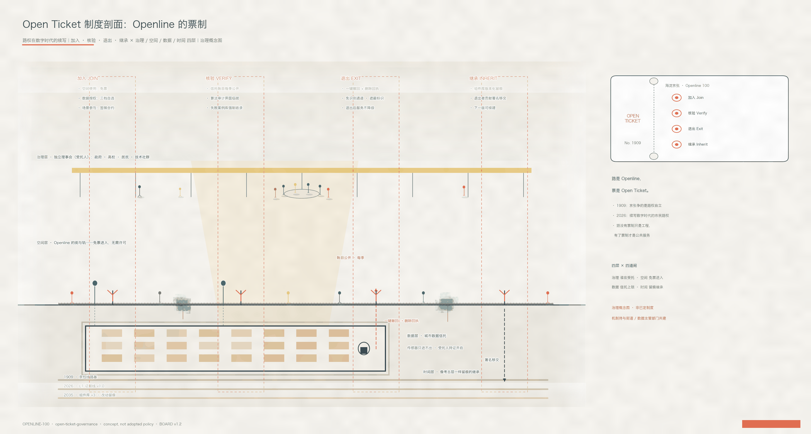
| 层 | 一句 | 空间落点 |
|---|---|---|
| 治理 | 独立理事会四方受托：政府 · 高校 · 居民 · 技术社群 | 公开议事廊；账目每季公开 |
| 空间 | 街与轨免票进入，上路不先买许可 | L1 / L2 地面；Kilometer Zero / The Join 只办加入仪式，不设收费闸 |
| 数据 | 城市数据信托金库上锁：传感器只进不出，受托人持证开启 | 驿站传感杆；算法审计界面临街 |
| 时间 | 像考古层一样留痕的继承：1909 路基 → 2026 证据线 → 2035 组件库 | 组件库版本化；失败案例库强制收录 |
四道闸把 Join · Verify · Exit · Inherit 写成可执行的票制，而不是口号 来源：
| 闸 | 许可怎么发 | 退出/继承怎么兑现 |
|---|---|---|
| 加入 Join | 空间使用免票；数据授权三档自选；场景参与签微合约 | 可随时退出名单与空间预约 |
| 核验 Verify | 信托账目每季公开；算法审计临街；失败案例库强制收录 | 结果可公开或授权撤回 |
| 退出 Exit | 一键撤回 + 删除回执；免识别通道与遮蔽标识 | 退出后服务不降级，不留画像 |
| 继承 Inherit | 组件库版本化留痕；退出者贡献署名移交 | 下一版可续建，不重写 |
第二章 · 资本闭环
可落地性不是把时间轴画得更细。每一期必须同时回答：建设什么 / 谁出钱 / 谁运营 / 收益怎么回流公共空间。三种融资情景——专项债 / 片区统筹 / 企业认养——是接力，不是三选一。三期认养受 Open Ticket 许可链约束，公共界面仍属公共。
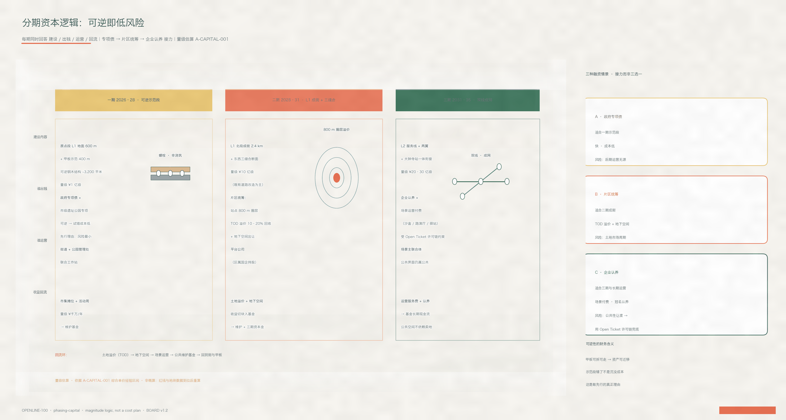
可逆即低风险。 五道口甲板螺栓连接、不浇筑：资产可迁移，示范段错了不是沉没成本——这是敢先做一期的真正理由。量级估算挂 A-CAPITAL-001，非概算。分期全表与 OL 出资逻辑见后文「分期资本逻辑」与实施经济学。
第三章 · 以人为轨
人字坡的「人」，1909 年写的是线路的形状；这个世纪的「人」字，写的是价值的归属。三次转身不是复活已退役的「人字轨」品牌，而是续写京张的换向术 深度：
| 转身 | 在哪换向 | 不做什么 | 当代对应 |
|---|---|---|---|
| 1909 · 地形 | 火车在山脊转身 | 不炸山 | 33‰ 坡度，道岔换向 |
| 2026 · 存量 | 城市在 13 号线上转身 | 不拆既有 | 螺栓借墩，可逆甲板 |
| 这个世纪 · 价值 | AI 在人的轨道上转身 | 不拿算力当轨 | 算力的坡挡不住，必须回人处换向 |
铁路解剖学的当代对应物：道岔 = Open Ticket 核验 / 退出闸；避难线 = 失败案例库；试车段 = 治理沙盒；轨 = 人类价值观，不是算力。
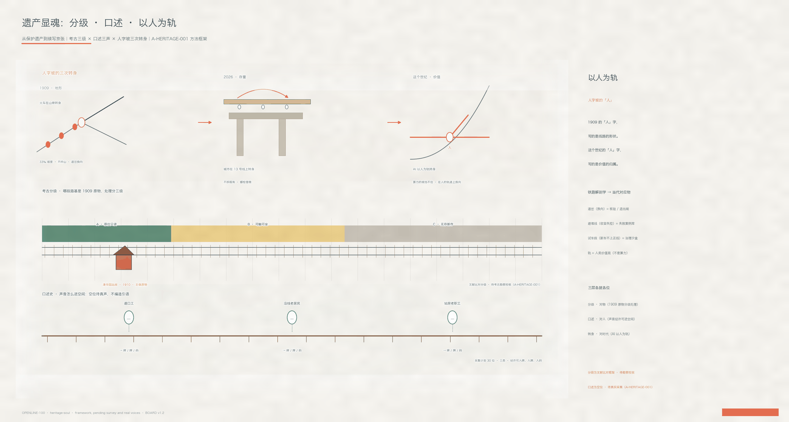
从保护遗产到续写京张，三带各就各位：
| 带 | 对谁 | 做法 | 诚实边界 |
|---|---|---|---|
| 考古分级 | 对物 | A 原位只读 · B 可触可坐 · C 无存新作；清华园站房 1910 为有据文保锚点 | 文献比对框架，待勘察校核（A-HERITAGE-001） |
| 口述声景 | 对人 | 道口工 / 沿线老居民 / 站房老职工；空位「＿」待真声，经许可入碑 / 牌 / 码 | 采集计划 30 位，不编造引语 |
| 三次转身 | 对时代 | 地形 → 存量 → 价值 | 不把人字坡做成第三套 Logo |
五种物质转译（铺装 / 沟 / 家具 / 碑 / 声）是显形；本章是显魂。显形图见总体设计章。
一个统领，五层支撑
三章是叙事主线。其余系统都是这条路的支撑件，不另立概念：
| 层 | 系统 | 与三章的关系 |
|---|---|---|
| 空间层 | 双线主脊（L1 证据线 / L2 服务线）+ 一轴 + 三缝合 + 两心一核 | 路的物质层：把「找到协作、完成复核」的空间成本降到最低 |
| 地标层 | Kilometer Zero · The Join | 加入与换向的仪式钉，不是收费站 |
| 票制层 | Open Ticket（四层 × 四道闸）+ 三区三种创新机制 | 全线同一套闸；全栈协同 / 开放提问 / 城市采纳是闸在三区的执行 |
| 场景层 | 三张全深度场景卡 + 十项场景索引（S-01–S-10） | 票的日常层：三区生产函数——少一步即假 |
| 未来层 | 形态八题 · 前瞻矩阵 · 不变量清单（附录 A） | 路的寿命层；资本闭环与以人为轨分别见第二、三章 |
设计依据与资料清单
本方案回应北京市规划和自然资源委员会海淀分局《百年京张AI创新带城市设计国际方案征集资格预审公告》，并以 brief/site-package/、data/source_registry.json 与 data/processed/agent_fact_pack.md 为机器可读依据。设计判断一律拆成：可追溯来源、可复算指标、可校验图层、可人工复核假设；正文只把关键证据放在判断旁，完整索引留在结构化文件中 来源 来源 深度。
资料用途边界按中央登记表执行 来源：formal 可用资料支撑任务与标准响应；background_only 只做背景；DATA-SRC-PROVISIONAL-BOUNDARIES-20260605 仅作 provisional intake。agent 不得把 provisional 升级为官方红线、法定控规或政府实施承诺。
当前总体设计范围与三处重点区均来自仓库临时粗略 polygon，标注为 provisional_constraint、official_boundary=false 来源 来源。它可支撑方案生成、可视化与 intake 自检，不可作审批依据或精确面积结论；组织方数据缺口本身不阻断内容评分。正式红线到位后，须整包重算 geometry、metrics、图件与 HTML，不能只换单个文件。
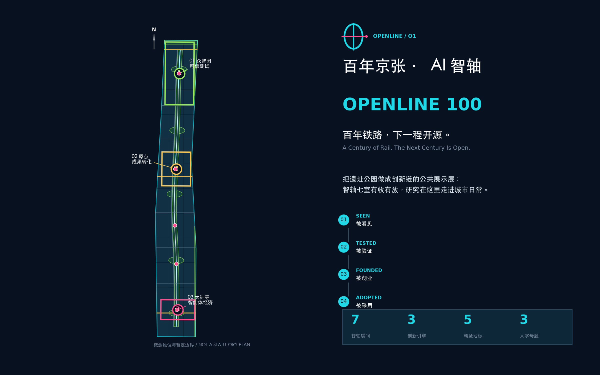
边界与面积讨论以提交包为准：总体足迹 空间数据、复算面积约 11.41 km² 指标；三处重点区 空间数据 等，数量为 3 指标。阅读导航见 来源，权威仍回原始 source_id。
现状诊断：不是缺 AI，是有路无票
在公告文字四至与 provisional 足迹可读的范围内，本方案把问题诊断写成四条可操作的城市病症（均属讨论级，非正式勘察结论）深度：
1. 有路无票。 京张遗址公园已提供南北文化与绿廊，但上路没有票制——谁可以进入创新过程、如何核验、如何退出、如何继承，缺少可执行的闸。公园易变成观赏带，而不是工作—学习—发布—验证的日常路。 2. 三区任务同频，空间模板却趋同风险高。 众智园（全栈/标准）、原点（近校/开源）、大钟寺（站域/消费转化）在公告中分工清晰，若仍按同一园区模板填功能，会消解三区价值差 空间数据。 3. 东西向被切开，南北向被拉长。 高校、社区、企业与站点多在 Openline 两侧腹地；若只画南北大道，五道口、清华东路西口、大钟寺站四象限仍会「看得见、走不通」。断点只标研究问号，不画假桥隧 空间数据。 4. 数据与权属缺口是设计条件，不是借口。 2026-08-11 街区控规已批，「一带一轴、两心多点」与四至、面积为公开已知；地块 polygon、容积率、高度、密度、退线仍待正式图则。本包用空 constraints.geojson 登记缺口，把「结构已知、强度未知」写成工作纪律，不把新闻面积升级成图则 深度 来源。
在地调研：五道口—大钟寺日常生活的空间证据（证据分级）
本页把诊断钉到可核验的在地证据上。证据分三级：A＝官方或权威媒体公开报道（注明来源日期）；B＝公开学术/设计文献；C＝待现场核验（附拍摄清单）。本页不放任何现状照片——真实影像只能来自现场，C 级清单完成前，相关设计判断保持概念级。
① 廊道真实状态（A 级，2026-08 核验）： 京张高铁五环内入地释放约 9 km 地面线性空间；一期（知春路—清华东路，2.4 km，16.8 ha）2023-06 开放，京张清华园火车博物馆 2024-02 开放（来源：人民网 2023-01-31 / 2023-06-29）；二期南北两段 2026-08 全线开放——南段（西直门—知春路）含四道口 2.4 km 百年复原铁轨与三环门户城市阳台，北段（清华东路—北五环箭亭桥，2.6 km，30.01 ha）含「京张之环」1909 主题广场（来源：北京日报客户端 2026-08-07）。关键更新：2026-08-11《北京海淀区京张铁路遗址公园沿线（人工智能创新街区重点地区）HD00—1601等街区控制性详细规划（街区层面）（2024年—2035年）》获批复——9 个街区、约 1668.2 ha，四至为东至新街口外大街、西至中关村大街、北至成府路、南至西直门外大街，「一带一轴，两心多点」（来源：北京日报 / 首都之窗 2026-08-12；市规划自然资源委）来源。本轮已完成公开文本叠合（见下节「街区控规叠合」）：结构与两心对位已写入方案；地块图则、容积率、高度仍未公布，强度区间继续作为概念建议、上限服从未来图则。不把新闻稿面积当成可审批几何。
AI 原点社区官方本意（A 级，2026-01 发布）： 2026-01-05 北京市发布首批四个人工智能创新街区，海淀「AI 原点社区」特色定位「创新策源、创业首选」，打造「全球 AI 人才创新创业第一站」——AI 原创策源技术全球首发地、AI 青年人才共创共燃栖息地、AI 全要素精准对接生态服务站；以五道口为核心约 3 km²，「街区—校区—园区」深度融合，愿景「10 分钟找到合作伙伴、15 分钟享受缤纷生活」（来源：新京报 / 北京日报客户端 2026-01-05）；东升镇表述「用空间生态的最近一公里，解决创新落地的最后一公里」（来源：中新网 2026-01-07）。场景卡 01 的主题选择即以此为 A 级依据：官方要策源、首发、栖息地和八找并置；本卡回答政策买不到的空间问题——实验室成果如何过墙。
「人工智能+」行动的民生与治理语境（A 级，2025-08 发布）： 国发〔2025〕11 号《关于深入实施"人工智能+"行动的意见》（2025-08-26 印发）部署六大行动：「民生福祉」要求「充分发挥人工智能对织密人际关系、精神慰藉陪伴、养老托育助残的重要作用」「构建更有温度的智能社会」；「治理能力」要求「打造精准识别需求、主动规划服务、全程智能办理的政务服务新模式」「开创社会治理人机共生新图景」「深入开展人工智能社会实验」（来源：人民网 / 央视 2025-08-26；中国政府网）。北京侧语境：接诉即办改革（2019 年起以 12345 热线为主渠道；2021-09 上升为地方性法规；六年受理约 1.5 亿件、解决率与满意率约 97%；2025-06-23 市委《关于进一步深化接诉即办改革的意见》强调「科技赋能、数智发展」；来源：北京市政府门户 2025-06-23；新华网 2025-12-01）与海淀「城市智能体」概念（2024 中关村论坛发布全球首个人工智能街区概念，五道口—大钟寺先导区、约 53 km²；来源：海淀区发布 / 北京新闻）。场景卡与三区对齐：卡 01 回答原点「策源如何过墙」；卡 02 回答大钟寺「核验过的能力如何上街」；卡 03 回答众智园「全栈如何升级而不拆城」。国发〔2025〕11 号的政务服务新模式与接诉即办，降到东翼场景索引 S-09，不占三区深度卡。卡 03 的治理接口仍承接「人机共生新图景」。
② 真实断点（A/B 级）：
| 断点 | 证据 | 证据级 | 对应设计动作 |
|---|---|---|---|
| 大钟寺站换乘断点 | 12 号线 2024-12-15 开通后与 13 号线（高架）站内换乘通道暂缓，工期暂定至 2027-12（随 13 号线 8 编组 / 未来 18 号线让渡同步）；乘客站外换乘实测约 8 分钟：12 号线 D 口 → 1733 下沉广场向东 → 楼梯上地面 → 13 号线 A/B 口；一卡通/码 30 分钟内连续计费（来源：北京日报 2024-12-15/16；市重大办答复） | A | OL-04：站一体化与四象限步行（既有路径，不挖新隧），不代替 2027 站内通道 |
| 五道口道口断点 | 「五道口」地名即京张铁路第五个道口，历史上是北京著名堵点；道口信号灯保留于公园、不再点亮（来源：清华大学新闻学院 2025-03；中国社会科学网 2023-07） | A | OL-07 缝合甲板 |
| 清华东路接缝 | 一期公园北端止于清华东路，二期北段南接清华东路——已开放两段在此接缝；15 号线清华东路西口站与 13 号线五道口站之间约 1 km 无轨交换乘（C 级待实测） | A/C | 中缝合 + 接驳清单 |
| 北段尽端与桥下 | 北段止于北五环箭亭桥桥下空间，与清河滨水绿廊、东升八家郊野公园连通（来源：北京日报客户端 2026-08-07） | A | 北缝合 + 桥下空间清单 |
③ 日常生活的空间证据（A/B 级）： 「以前一道高墙把小区和铁路彻底隔开，想去对面买菜都得绕路半小时」——大钟寺社区居民，二期开园（来源：北京日报客户端 2026-08-07）；「吃完饭就能来溜溜弯儿」——一期 C 区带孩子的居民（来源：北京日报 2023-05）；「火车就要开过来了」的道口提示音是五道口集体记忆，北林师生等火车通过是校园记忆一部分（来源：新京报 2022-04；科学网 2019-10）；一期设计团队 PLPS 调研诊断——场地核心矛盾是消极「城市背面」与广泛公共空间需求之间：铁路阻隔、大院围墙封闭、公共服务不足、历史记忆消失、活动空间缺失（来源：《风景园林》2025 年第 9 期，B 级）——与本方案「现状四症」互证；一期周边 18–20 所高校与科研院所、科创企业密度超 800 家/km²、沿线 9 街镇 70+ 社区（来源：人民网/北京日报 2023，A 级）。
④ 现场拍摄与核验清单（C 级，待执行）：
| 编号 | 机位 / 对象 | 必拍必测内容 | 对应设计动作 |
|---|---|---|---|
| P-01 | 大钟寺站 12 号线 D 口 → 1733 下沉广场东端楼梯 → 13 号线 A/B 口 | 换乘路径全程步行计时视频 + 高差/无障碍断点 + 营业时段是否阻断 | OL-04 站一体化 + 四象限 + 无障碍 |
| P-02 | 五道口 13 号线站—成府路交叉口 | 晚高峰人流对冲、非机动车淤积、道口信号灯遗存 | OL-07 缝合甲板 |
| P-03 | 清华东路公园一期北端门 + 二期南端门 | 一期二期接缝、15 号线清华东路西口接驳步行实测 | 中缝合 |
| P-04 | 一期铁轨保留段（知春路—北四环） | 轨作铺装现状、人轨关系、夜间使用 | L1 证据线 / 五重转译 |
| P-05 | 清华园站两代站房 + 三才堂路原站址 | 遗产现状与展陈方式 | L1 证据线 / 清华园站遗产展陈 |
| P-06 | 四道口复原铁轨段 + 三环城市阳台 | 二期建设标准与人流 | 南段 Openline 延伸 |
| P-07 | 东王庄 / 展春园 / 大钟寺社区界面 | 大院围墙、首层业态、买菜路径 | LU-005 / 开源院落 |
| P-08 | 1733 商业空间 + 字节跳动总部界面 | 站域消费与通勤人流现状 | LU-004 / Adoption |
诚实声明： A/B 级证据均为公开报道与文献，来源与日期随文标注，下一轮统一登记进 source registry；本页不伪造任何现状影像，C 级清单是现场作业单而非已完成工作。
三层范围工作框架
公告确定三层工作：统筹研究约 43.6 km²，回答 AI 创新生态与未来城市形态；总体设计约 11.4 km²（京张遗址公园周边 1–2 km），达到控规深度城市设计；重点区域合计约 368.4 ha，达到规划综合实施方案深度。本方案把三层转译为同一条工作方法——Openline：不是新画红线，而是把遗产廊道、慢行缝合、产业锚点与 Open Ticket 票制叠成可加入的市民路 标准 深度。
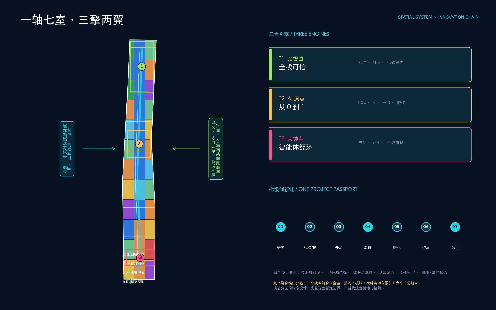
总体概念命名为「何以京张：The Openline 100」。中文问「何以」——一百年前何以争得路权自立，这一百年何以把路权续写成可继承的市民票制；英文 Openline 是路，Open Ticket 是票，Join · Verify · Exit · Inherit 是四道闸。空间结构叠合已批街区控规后是：一带（双线 Openline 主脊）+ 一轴（中关村大街）+ 两心（五道口 Question · 创新策源地 / 大钟寺 Adoption · 智能原生街）+ 一核（众智园 · 花园型创新街）+ 东西缝合。临时足迹只作淡约束；图面强调廊道、节点与活动层，不让粗略外形主导构图 空间数据 深度 来源。
| 层级 | 设计问题 | Openline 回答 | 数据落点 |
|---|---|---|---|
| 统筹研究 | 世界级 AI 生态如何落到城市 | Openline 协议 + 案例机制转译 + 三区两翼协同回路 | compliance / standard 矩阵 |
| 总体设计 | 更新、交通、蓝绿、风貌如何互锁 | 用地分区挂在 Openline 上；双线 Openline/缝合对位已批「一带一轴」；蓝绿公共层接一刻钟生活圈 | 空间数据、空间数据 |
| 重点区域 | 三区为何不是同一园区模板 | 众智园 = 花园型创新街（全栈+治理）；原点 = 创新策源地；大钟寺 = 智能原生街；两翼 = 中关村科技服务 / 小月河场景赋能 | 空间数据 |
路与票（Openline / Open Ticket）与四道闸见前文「总体概念」章，本章起不再重复展开。
街区控规叠合：已知结构 · 设计转译 · 仍未知
2026-08-11 获批的是街区层面控规的公开文本，不是地块图则。本方案叠合的是四至、面积量级、空间结构与产业方向；不叠合未公布的容积率、高度、密度、退线或九个街区的 polygon 来源 标准 深度。
全称：《北京海淀区京张铁路遗址公园沿线（人工智能创新街区重点地区）HD00—1601等街区控制性详细规划（街区层面）（2024年—2035年）》。批复机关口径：市规划自然资源委。规划范围位于海淀区南部，涉及中关村、北下关、北太平庄三个街道（草案公示阶段公开），东至新街口外大街、西至中关村大街、北至成府路、南至西直门外大街，9 个街区，总用地约 1668.2 公顷。
三套范围不要混：
| 范围 | 四至 / 规模 | 法律与竞赛地位 | 对 Openline 的含义 |
|---|---|---|---|
| 街区控规 HD00—1601 等 | 北成府路 · 南西直门外大街 · 西中关村大街 · 东新街口外大街 · 约 16.68 km² | 已批街区层面控规；图则未公开 | 成府路以南的结构母版；两心在此 |
| 征集总体设计 | 北北五环 · 南西直门外大街 · 西大钟寺东路/荷清路 · 东学院路/西土城路 · 约 11.4 km² | 竞赛工作范围；polygon 仍为 provisional | 南北比控规更长、东西比控规更窄 |
| 征集统筹研究 | 北北五环 · 南同上 · 西万泉河路 · 东京藏高速 · 约 43.6 km² | 系统研究，不画假红线 | 三区两翼与区域协同的讨论层 |
控规南北短、东西宽；征集总体南北长、东西窄。重叠核在成府路以南的公园两侧。公园二期北段（清华东路—北五环箭亭桥）在本份街区控规公开北界之外，但仍在征集总体 11.4 km² 之内。
核验：众智园是不是「规划外」？不是任务书规划外。是另一份文件的公开四至外。
| 文件 | 众智园在不在 | 依据 |
|---|---|---|
| 征集总体设计 | 在 | 公告北至北五环，约 11.4 km²；众智园是走廊北段 来源 |
| 征集重点区域 | 在，且必做 | 自北向南第一区，约 192.1 ha；任务写五环路、清河，不是可选项 |
| 2026-08-11 街区控规 HD00—1601 等 | 不在公开四至内 | 新闻口径北至成府路、海淀区南部、两心只有大钟寺与五道口 来源 |
交叉定位（公开地理，不是地块红线）：成府路约 39.991°N，五道口站压在成府路上；海淀区政府 2026-03 把北部加速区锚在中关村东升科技园学北园（学清路 / 月泉路，约 40.019°N、116.351°E），学知园站约 40.014°N——在成府路以北约 2.5–3 km。任务书把五环 / 清河写给众智园，把五道口 / 清华东路西口写给原点，两区在成府路南北两侧。草案阶段街道名单为中关村、北下关、北太平庄，不含东升地区。
因此：众智园详细设计继续做；只是不能把它写成这份已批控规的「第三心」，也不能用 1668.2 ha 当它的法定覆盖。正式九街区 polygon 若北界越过成府路并吃进学北，本判断作废并整包复算。
「一带一轴，两心多点」如何挂上 Openline：
| 控规要素 | 公开口径 | Openline 落点 | 本轮动作 |
|---|---|---|---|
| 一带 | 京张铁路遗址公园产业创新带；绿色公共空间引领更新 | 双线主脊 L1 证据线 / L2 服务线 | 对齐。公园廊心已建成，增量在贴边，不重做廊心 |
| 一轴 | 中关村大街创新发展轴 | 西翼 · 中关村科技服务翼 | 空间落在已批一轴上；职责是 IP、资本、标准与全球要素配置，不是把西翼写成高校园区 |
| 两心 · 大钟寺 | 互联网和相关服务业、人工智能、新媒体（草案公开口径，获批新闻未改口） | 南核 · 智能原生街（智能体 / 终端 / 内容消费） | 对齐。片区产品是街面业态协议；站一体化与路口四象限是到达系统（OL-04），不重做已建成南段公园 |
| 两心 · 五道口 | 人工智能产业创新集聚区、顶尖人才交流中心（草案公开口径） | 中核 Open Question / AI 原点社区 · 创新策源地 | 对齐。实施抓手是中缝合与转化街；不把原点写成第三个「心」以外的园区 |
| 多点 · 知春路 | 重要空间节点；北侧卫星制造厂科技园为存量更新样本 | L2 中段驿站 + 老厂房更新类型 | 新增节点，不另立核 |
| 多点 · 四道口 | 重要空间节点；二期百年复原铁轨已开放 | 南段 L1 延伸 | 承认已建成，增量在两侧贴边 |
| 众智园 · 全栈协同 | 征集重点区必做；不在本份街区控规公开四至内（北界成府路 / 锚点学北园） | 北核 · 花园型创新街（学北园—清河—五环；空间产品为可升级的城市主板） | 详细设计继续做。它是全栈自主创新与全球治理的组织区，不是第三心 |
产业与更新（获批新闻可核验，不作招商承诺）： 存量路径是老旧厂房改造、低效楼宇更新；业态方向是大模型、智能体、具身智能；组织方式是领军企业牵引、上下游集聚。本方案的回应：功能差先于业态清单——大钟寺负责 Adoption（智能体/终端/内容消费的可采纳界面），五道口负责 Question（人才交流与开源发布），众智园负责全栈协同（从底层软硬件、数据模型到智能体应用，并把标准与安全治理嵌入研发全过程；征集重点区必做，本份街区控规公开四至未覆盖）。知春路北侧卫星制造厂科技园只作「存量更新类型」的公开样本，不写成已纳入本方案实施。
蓝绿与生活圈： 控规要求南北贯通、东西连通的步道与骑行道，公园内融入体育、游憩、便民；构建生活圈与创新圈融合的一刻钟社区服务圈。二期已实施 3 条鱼骨状慢行通道，盘活高架桥下，连接清河滨水绿廊与东升八家郊野公园——这证明北段缝合已有建成增量，Openline 北缝合应接上这些通道，而不是另画一套。草案阶段曾公布 2035 年设施量级（公共服务 298 处、交通 37 处、市政 62 处、城市安全 36 处）及南长河 / 小月河景观带、海淀黄庄 / 国家图书馆等公共活动中心——均属 2024-12 草案公开口径，获批新闻未复述，本方案不升格为已批指标 来源。
仍未知、整包复算的触发条件： 九个街区正式 polygon、地块图则、容积率 / 高度 / 密度 / 退线、道路红线、权属、文保与蓝线。触发后 geometry → metrics → 图件 → HTML 整包重算，不只换数字。草案公示采信通告只确认规划名称、道路节点标注与「笑祖北一路 / 二路」等命名，不提供本方案可用的强度或边界 来源。
统筹研究范围产业与未来城市研究
命名、Logo 与视觉识别系统
主名称：何以京张：The Openline 100。路与票：路是 Openline，票是 Open Ticket——票制名不是第三套 Logo。Logo 方向：一条可通行的细脊线穿过「100」字样，不用平面几何配对当地标。三大定位对公告「文化带 / 都市 AI 生活体验带 / AI 融合创新带」的转译是：文化 Openline（遗产可走）、生活 Openline（人才可停）、创新 Openline（成果可验）来源 标准。
五大功能按任务书原词落位，不另起一套：
| 任务书功能 | 主责空间 | Openline 动作 |
|---|---|---|
| AI 全栈自主创新体系 | 众智园可升级城市主板 | 共享底板 + 五类可升级单元 + 全栈协作街 |
| 世界级 AI 创新生态 | 原点创新策源地 | 开源发布、近校转化、人才停留 |
| AI+ 场景赋能新范式 | 东翼 · 小月河场景赋能翼 | 真实场景出题、公共体验路径、可关闭 |
| 智能化 AI 活力城市 | 小月河翼 + Openline 生活带 | 驿站、一刻钟生活圈、缝合带服务 |
| AI 治理全球话语权 | 众智园全球治理中心 | 标准、安全、人工复核、公众说明 |
三区两翼协同回路（可画进结构图的物流/知识流）：
- 东翼 · 小月河场景赋能翼 → 输出：医疗 / 教育 / 法律 / 生活 / 交通等可感知的真实试题；输入：街面采用反馈与治理复核结果。河廊是场景翼，不升格为第三轴，不把大钟寺站写成东翼。
- 中核原点（世界级创新生态） → 输出：公开问题、开源发布、近校人才与可转化原型；输入：小月河的试题、众智园的工具与标准接口。
- 北核众智园（全栈 + 治理） → 输出：工程化能力、共享技术平台、标准与安全组件；输入：原点的问题与人才、大钟寺的采用缺口。
- 南核大钟寺（智能原生新业态） → 输出：可购买 / 可订阅 / 可试用 / 可拒绝的街面业态、数据要素会客、国际交往；输入：众智园完成治理复核的能力、原点可转化成果、小月河验证过的场景题。
- 西翼 · 中关村科技服务翼 → 贯穿全程：IP、资本对接、标准许可、全球要素配置。空间落在控规「一轴」中关村大街，沿东西缝合接入五道口—清华东路；近校转化街属于原点，不是西翼的全部。不声称校园权属变更，不编造基金与招商名单。
两翼不另起园区。西翼的职责是科技服务，不是高校园区；东翼的职责是场景出题，不是地铁门户。大钟寺站只做南核的到达面。小月河在控规获批新闻中未复述为法定轴，本方案按任务书保留为场景翼，不升格 来源 来源。
区域结构（43.6 工作台）： 现有用地结构图装的是 11.4 km² 窄条。西翼中关村大街在窄条以西、统筹西界万泉河路以东；东翼小月河在窄条以东、统筹东界京藏高速以西——两翼必须挂在 43.6 km² 上才看得见。科学城北区是五环以北的官方规划地理（上地 / 软件园为近接面；永丰 · 翠湖 · 北清路为更北纵深），本方案只画接力接口，不进口径 polygon，不另起第二园。京张走廊在箭亭桥以北以虚线接清河滨水绿廊；清河是河，不是清河站枢纽。中关村大街向北的「高端创新集聚发展走廊」是北区控规用语，本方案不声称已设计北区 来源 空间数据 深度。三层范围对位见上节 深度。

纽带图（同一条走廊，换一个问题）： 上图回答「工作台有多大」。下图回答任务书原句——以京张遗址公园为纽带，联动高校、园区、企业与社区，并把交通门户和资本接口按真实地理挂上。北核在上、南核在下，西翼在左、东翼在右。清华 / 北大 / 中科院 / 学院路是近校腹地，不进西翼；学北园 / 上地 / 软件园是北向接力，不另起第二园；西直门—大钟寺—知春路—五道口—清华东路西口—学知园是到达链；1733 与 W-03 是企业 / 资本对接，不点名；社区落在东西贴边。金融街在西直门以南，只作邻接，不进 43.6。 深度 来源
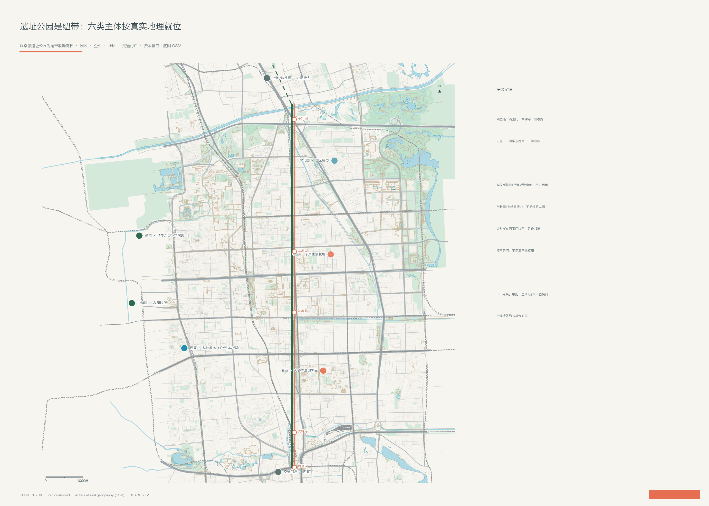
两翼深化设计（讨论级 · 概念建议）
两翼此前只有职责、没有设计；本节把两翼落到节点、界面与建筑概念。均为概念建议：不声称权属变更、不点名签约机构、不编造政策与基金 深度。
西翼 · 中关村科技服务街：科技服务 × 全球要素配置的首层界面
核心句：西翼生产的是「可成交的科技服务」与「可进出的全球要素」，不是又一条写字楼大街。 空间落在已批控规「一轴」中关村大街，增量在首层与低效楼宇更新，不新造塔楼，不改大街断面等级。
全球要素配置拆成四张「接口桌」，每张桌子有具体的首层界面（类型接口，不虚构入驻机构）：
| 要素流 | 空间界面 | 机制（概念） | 诚实边界 |
|---|---|---|---|
| 人才流 | 国际人才服务首层（W-01） | 签证 / 居留 / 执业许可类型咨询、国际社群活动、多语导视与短居接口 | 不承诺任何出入境或人才政策待遇 |
| 资本流 | 路演与对接厅（W-03，既有楼宇首层） | 对接预约制、路演节奏与大钟寺 S-05 联动 | 不编造基金与投资额，不承诺财政激励 |
| 技术与 IP 流 | IP 与标准许可窗口（W-02） | 许可模板、成果清权、转化合同类型服务 | 不虚构高校或企业共建合同 |
| 标准与信息流 | 国际标准讨论与公开发布空间（W-02） | 双语标准草案公开日，与众智园治理中心的治理门联动：标准在众智园起草、在中关村大街发布 | 不声称国际标准组织已入驻 |
三个真实节点（沿中关村大街，与缝合线和控规「多点」对位；编号为概念节点，非 OL 项目）：
| 节点 | 位置对位 | 片区产品 | 界面动作 |
|---|---|---|---|
| W-01 五道口交汇口 | 中关村大街 × 成府路，接中缝合与原点 | 国际人才首层 | 首层开放协议 + 多语导视 + 连续遮荫；与原点八找并置界面步行衔接 |
| W-02 知春路口 | 中关村大街 × 知春路，控规「多点」；知春路北侧卫星制造厂科技园为存量更新公开类型样本 | 科技服务与标准首层 | IP / 许可 / 标准工作坊进存量楼宇首层；只作类型样本研究，不写成已纳入实施 |
| W-03 大街南段口 | 中关村大街南段，接南缝合方向与大钟寺站域 | 资本与路演界面 | 既有楼宇首层改造为对接厅；向西不接校园权属、向南不抢大钟寺街面产品 |
西翼界面硬规则（与总体「界面与首层协议」一致）：首层开放率 ≥60%；连续封闭围墙 ≤50 m；遮荫树列优先于装饰铺装；存量低效楼宇更新优先于新建；四张接口桌全部适用 Openline 四规则——可预约加入、服务记录可审计、可随时退出、组件随 Inherit 版本化。
东翼 · 小月河场景出题廊：五类真实场景沿河廊发生
核心句：东翼生产的是「真实试题」——医疗 / 教育 / 法律 / 生活 / 交通五类场景在小月河河廊被出题、被漫步、被体验、被回流，可关闭、须人工复核。 河廊不是第三轴，是场景翼的线性容器。
文化锚点（公开地理，机位列入 P 清单待核验）：小月河为元大都西护城河遗存，沿线元土城遗址公园与「蓟门烟树」碑——东翼的遗产层与京张主脊对位：主脊讲自主工程史，河廊讲城市生活史。场景试题放在活的城市生活里，不放在展厅里；不仿古、不造碑廊，只在既有遗址公园步道系统上做可逆插入。
河廊站点（约 3–4 个，间距 800–1000 m，与 S-09 驿站共址；五域试题分站承载、可轮换；编号为概念节点）：
| 站 | 承载场景域 | 出的什么题（概念） | 空间落点 | 回流路径 |
|---|---|---|---|---|
| E-01 北段站 | 医疗健康 | 适老康复与慢病管理的真实试题：康复步道段、知情同意、健康数据本地存储 | 河廊北段邻近既有医疗机构的类型接口（不点名、不声称合作） | 脱敏摘要 → 原点失败案例库 / 众智园治理门 |
| E-02 通学段站 | 教育 | 通学安全与 AI 伴学：接高校与社区腹地的通学路径段 | 河廊与东西向社区路径交汇处 | 试题与采用反馈 → 原点 / 大钟寺 |
| E-03 土城遗址段站 | 法律 + 文化 | 社区法律咨询智能体 + 人工值班窗口；遗产步道公共体验 | 元土城遗址公园步道贴边，可逆插入 | 高频问题 → 治理门推演层 |
| E-04 南段站 | 生活 + 交通 | S-09 未呼先应全功能常驻（听懂 / 想到 / 办妥；红色「我要跟人说话」召唤钮；工单直转 12345）；S-04 慢行导航河廊段，仅聚合数据、默认可关闭 | 河廊南段接大钟寺方向 | 12345 工单系统；断点数据 → OL-01 清单 |
驿站建筑概念（端侧算力驿站 · 形态八题第 4 题落地，以 E-02 为先行原型）：
- 体量与界面： 约 600–900 m²、两层；首层全开放，执行「三可」（可进入 / 可发生 / 可退出）；背街面设服务院，设备物流与公共慢行分行。
- 三个部件： ① 响应站——未呼先应人工坐席与智能体界面并置，人工始终在场；② 机器人巢——背街面，充电 / 调度 / 编号可投诉，与公共空间物理隔离；③ 余热暖座温室——端侧算力余热供给的可坐空间：冬天是暖座，夏天是荫棚，算力的温度可坐可触。
- 能源与接口： 光伏廊架兼遮荫；预留接入「第三条轨」浅埋公用脊的接口位；井盖刻接口容量，井盖即 API 文档。
- 构造： 可拆装、材料银行登记、低扰动基础；一次技术换代只换模块，不拆驿站。
- 禁忌： 公私算力物理隔离；供应商另行授权；不做说教装置、不做个人追踪；任何场景试题可一键关闭。
两翼共同的成功判据（自检）： 西翼——不进入任何封闭写字楼，能否在大街上碰上四张接口桌中的至少一张（必须能）；东翼——沿小月河走 20 分钟，能否碰上至少一个正在出题的真实场景、且能拒绝参与（必须能）；两翼——都不另起园区围墙（必须没有）。
诚实边界： 两翼节点均为概念落点，无宗地权属与现状测绘；小月河蓝线、防洪与遗址保护范围待正式资料；驿站原型须在驿站专项（OL-05）与权属、市政容量确认后深化。现场核验清单增补：P-09 中关村大街三节点首层界面与遮荫现状；P-10 小月河全线步道连通性、遗址保护标识与 800–1000 m 站距实测。
信息图视觉规范（Sasaki v1.1 · 图面表达标准）
全案图面——五张必交图、「走进去」氛围图、A0/A3 展板与电子展板——统一执行 Sasaki 风格城市设计视觉规范 v1.2（BOARD v1.1 WINNING + 地点剖面）。取色与版式以下列要点为准，不另挂投稿包外文件。要点如下：
设计哲学：图即思考。 一张图只讲一个观点，标题即结论；复杂论证用「问题 → 机会 → 策略 → 空间 → 场景」图组序列完成。同一张图须同时通过三类读者检验：政府读得出格局与可实施性，开发商读得出价值与密度，公众读得出「我的生活会怎样」。人的尺度永远在场；生态为底盘，建设量是嵌入物。
轴测与五层模型。 全部轴测图统一平行投影（无灭点、尺度可量测、同角同朝向）：总体 30°/60° 平面斜轴测，节点 45° 等轴测，剖轴测沿主轴剖切，爆炸轴测与总体同角竖向拉开。所有分析图遵循自下而上五层：① 基底（地形水文，浅灰蓝/米白退让）→ ② 生态（绿色明度梯度，强调网络连通而非斑块）→ ③ 基础设施（中性灰、线宽分级）→ ④ 功能（功能色块或白模体量）→ ⑤ 活动（人物剪影与暖色点缀——唯一允许高饱和的层，任何情况下不被下四层压住）。爆炸轴测层间等距、0.1pt 引导线对齐、每层配一句 ≤12 字问句标注，且必须回扣一张合成图证明分层逻辑能「合回去」。
生态配色（唯一取色来源）。 基底三色：米白 #F7F5F0（默认）/ 浅灰蓝 #EEF2F3（滨水水文主导）/ 暖灰 #E8E6E1（建成区密集）。生态与功能色板：深绿 #2D6A4F（生态保育）、中绿 #52B788（城市公园）、浅绿 #95D5B2（社区绿地）、黄绿 #D8F3DC（草甸/屋顶绿化）、水蓝 #168AAD（水系骨架）、浅蓝 #A9D6E5（雨洪湿地）、珊瑚橙 #E76F51（活力节点）、暖橙 #F4A261（混合功能）、赭黄 #E9C46A（活动事件，仅第⑤层）、灰粉 #B5838D（创新政策区，克制）。禁忌：禁纯红 #FF0000、纯蓝 #0000FF 及荧光色；全图主色 ≤5 个色相；绿蓝为主角、建设量为配角；高饱和暖色面积 ≤ 图面 10%；同一色相跨图必须同值，不凭感觉取色。
图面技术细则。 线宽四级：外轮廓 0.5–0.8pt / 次级边界 0.3pt / 内部细节 0.15pt / 等高线与引导线 0.1pt。中文思源黑体或等效人文无衬线，西文 Helvetica/Avenir，图内字号 ≥6pt。人物为尺度准确的简洁剪影，植物有季相与冠幅变化。单层 45° 定向软阴影、透明度 15–25%，禁多重投影与镜面反射。标注引出线 0.1pt、文字 ≤ 两行、问句式优先。导出：汇报 150dpi / 展板 300dpi，sRGB，保留分层源文件归档。
渲染质感六修正（针对 AI/程序化出图）。 ① 爆炸轴测每层承载真实空间内容（等高线+水系 / 成群树冠 / 真实路网 / 有高度有明暗侧面的体量 / 成组人物场景），杜绝空白灰板；② 大面积低饱和 + 小面积高饱和强对比：基底 S 5–15%、生态绿 S 40–60%、锚点橙蓝 S≥70% 且面积 ≤10%；③ 落地感：层板有可见厚度，45° 定向软投影 + 物体根部接触阴影（AO），板厚侧面暗于顶面 10–15% 明度；④ 结构边线一律 crisp 矢量线 #37474F（0.1–0.8pt 四级），道路中性灰分级、慢行暖灰虚线，手绘晕染只允许发生在色块纹理内部；⑤ 人物为姿态化剪影（骑车、闲坐、遛狗）、成组出现、密度 ×3，配长椅/自行车架等场景道具；⑥ 版式去 dashboard UI 语言：大标题左对齐深灰、图占画面 70%+、图注一行一句、侧栏只放图例不放段落。
水彩×矢量双层语言。 结构是矢量的，气质是水彩的：用地边界、道路红线、轮廓等结构性边线一律 crisp 深灰 #37474F 矢量线；绿地、水面、铺装等色块填充走水彩晕染（不透明度 60–80%、边缘羽化 2–4px、Multiply 混合），整体叠纸纹 5–10% 且不干扰文字细线。树冠为松动外形的笔刷簇、同树种 2–3 种明度（禁正圆矢量填充）；水面 #A9D6E5 平涂 + 5–8% 明度渐变或稀波纹线（禁 CAD 式纯色）。边界共存规则：水彩色块的轮廓线仍须为干净 0.3pt 矢量线，晕染只发生在 fill 内部。分工：正式分析图矢量为主、水彩仅作底色纹理；「走进去」氛围图走水彩手绘轨——轴测轨与水彩轨双轨并列为强制基准，禁止效果图回退硬边图解。
出图检查清单（任一不符即退回）。 视角朝向与全案轴测一致；五层顺序正确且活动层未被压住；每层有真实内容、无空板；色值取自规范色板、主色 ≤5 色相；高饱和锚点色 ≤10%、基底低饱和但不洗白；人物成组、有姿态、尺度准确；标题即结论、一图一观点；爆炸轴测配回扣合成图、层板有厚度与三级阴影；线宽四级可辨、晕染仅在色块内部；版式无圆角卡片等 UI 元素、侧栏仅为图例；政府/开发商/公众三类读者各有对应图面；效果图承诺的材质与空间尺度可追溯、可兑现。
国土空间与产业融合的创新思路（讨论级）
在不改写法定控规的前提下，本方案提出三条「空间—产业」工作原则 标准 深度 来源：
1. 廊道优先于地块填空：先锁定 Openline 双线与缝合可达，再谈地块触媒；避免产业园式大地块打断步行。控规已把绿带写成更新引擎，本方案把增量放在贴边，不重做已开放的廊心。 2. 制度差 > 业态清单：三区差异首先是开放规则（全栈研发与治理 / 可提问 / 可采纳）。控规点名的大模型、智能体、具身智能是业态方向，不是三个园区的同一张功能表——大钟寺负责城市采纳，五道口提出原创问题，众智园完成全栈研发、工程化与治理协同。 3. 结构已知、强度未知时用界面与首层协议控风险：街区层面「一带一轴、两心多点」已批；容积率/高度仍 unknown。用首层开放率、连续遮荫、慢行优先断面与公共组件库约束城市体验，而非编造 FAR。存量路径优先老厂房与低效楼宇，不把新闻里的卫星制造厂科技园写成已纳入实施。
全球 AI 创新生态案例（机制转译，非招商清单）
八案例——Station F（巴黎）、MaRS（多伦多）、Kendall Square、Science Park Amsterdam、HafenCity Digital Hub、Block71（新加坡）、Cyberport（香港）、中关村街道式创新网络——仅作空间与运营机制转译，不编造投资额、企业名单或政府承诺 来源。可转译机制一句话概括：大站房共享界面、共址转化走廊、首层开放协议、绿廊串联研究单元、遗产地上的数字创新与慢行、轻资产社区运营节奏、企业服务与公共展演并置、近校近轨近生活混合街区。逐案「可转译机制 — Openline 落点 — 避免照搬点」对照表见附录 B。
AI 创新生态图谱（主体—关系—Openline 接口）
任务书要求的 AI 创新生态图谱 在此落地：不是机构名录，而是角色类型 + 关系流 + 空间接口。下列主体均为公开角色类别，不点名具体高校/企业/基金/金额，避免编造招商清单 来源。
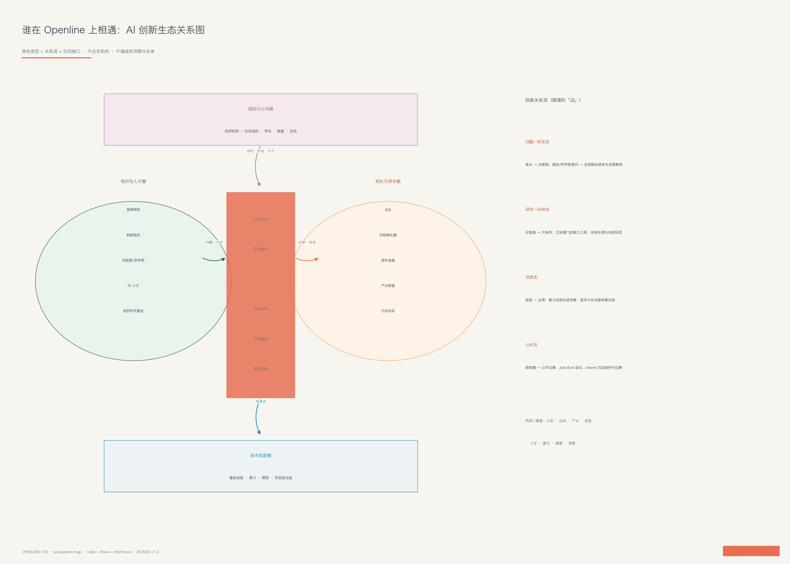
图谱结构：五圈一层接口
┌─ 规则与公共圈 ─────────────────────┐
│ 政府机构 · 社会组织 · 学会 · 联盟 · 协会 │
└──────────────┬──────────────────────┘
│ 规则 / 标准 / 许可
┌─────────────────────────┼─────────────────────────┐
│ ▼ │
┌─ 知识与人才圈 ──┐ 【Openline 空间接口】 ┌─ 转化与资本圈 ──┐
│ 高等院校 │ 全栈协同｜开放提问｜城市采纳 │ 企业 │
│ 科研院所 │◄─── 两翼：科技服务 / 场景赋能 ──►│ 科技孵化器 │
│ 实验室 / 科学家 │ L1/L2 · 三缝合 · 两地标 │ 资本金融 │
│ AI 人才 │ │ │
│ 自然科学基金 │ └────────┬────────┘
└────────┬─────────┘ │
│ 问题 / 成果 / 人才 │ 转化 / 路演 / 投资对接（概念）
└──────────────────┬─────────────────────────┘
▼
┌─ 技术底座圈 ──────────────────────┐
│ 基础设施 · 算力 · 模型 · 实验室设施 │
└───────────────────────────────────┘十七类主体如何挂上 Openline
| 主体类型 | 生态角色 | 主接口区 | Openline 动作（概念） |
|---|---|---|---|
| 高等院校 | 知识生产、人才输送 | 原点近校生态 | 转化街、授权窗口；不改校园权属叙事 |
| 科研院所 | 基础/应用研究 | 众智园全栈单元 + 原点 | 联合研发、评测集共建、问题墙供题 |
| 政府机构 | 规则、许可、公共利益边界 | 全带（规则层） | 许可与安全预案入口；不写成已批政策 |
| 社会组织 | 社区共治、公益监督 | The Join / 治理中心议事廊 | 公民论坛、可退出监督 |
| 资本金融 | 转化资金对接（概念） | 西翼科技服务 + 大钟寺街面 | 服务翼对接、街面路演；不承诺财政/基金额度 |
| AI 人才 | 核心流动资源 | 三核 + 生活带 | Join 规则、可停留住房/协作建议 |
| 企业 | 场景需求与产品化 | 大钟寺采纳为主，众智园工程化回流 | 研发—治理复核—采纳；标识须清权 |
| 基础设施 | 轨道、市政、慢行、能源 | L1/L2、缝合、站域 | Openline 物理层；工程线位待正式资料 |
| 算力 | 训练/推理/端侧资源 | Openline 驿站（端侧原型） | 须另行授权；不指定供应商 |
| 模型 | 可核验能力单元 | 众智园数据与模型单元 | Verify：公开摘要或授权撤回 |
| 实验室 | 研发、工程化与安全边界 | 众智园可升级研发单元 + 受控测试空间 | 共享技术平台；专家复核；公众界面与受控区分开 |
| 科技孵化器 | 轻资产加速 | 原点 / Adoption 服务栈 | 发布厅—路演连续界面 |
| 科技类学会 | 同行评议与标准讨论 | 众智园全球治理中心 | 标准工作坊、公开评议日 |
| 产业联盟 | 跨企协同与互通 | 众智园 ↔ 大钟寺 | 协议版本墙；不写死成员名单 |
| 行业协会 | 行业规范与培训 | Adoption + 生活样板街 | 培训/导览接口 |
| 科学家 | 问题定义与公信背书 | Kilometer Zero / 众智园治理中心 | 提问、复核；肖像与成果须授权 |
| 自然科学基金 | 基础研究资助通道（类型） | 知识圈 → 原点/众智园 | 仅作资助类型接口；不虚构立项 |
四条关系流（图谱的「边」）
1. 问题—研发流（原点 → 众智园）： 高校 / 科研院所 / 科学家 / AI 人才在原点提出问题 → 众智园全栈单元完成联合研发、工程化与治理复核。 2. 研发—采纳流（众智园 → 大钟寺）： 完成工程化和责任接口的模型/能力经企业、孵化器、行业协会进入大钟寺消费与路演界面；真实采用需求与失败案例回流众智园。 3. 资源流（底座 ↔ 全带）： 基础设施与算力通过驿站/站域进入场景；资本金融只出现在「对接界面」，不写入确定资金安排。 4. 公共流（规则圈 ↔ 公开议事）： 政府机构、社会组织、联盟在许可与监督层运作；公民与人才经 Join/Exit 进出，经 Inherit 沉淀组件与纪要。
机制八要素（与上图同构，不另起炉灶）
土地 · 空间 · 产业 · 资金 · 人才 · 算力 · 数据 · 场景 —— 分别对应：触媒分区、双线 Openline、三制分工、资本对接界面（概念）、人才画像、端侧/授权算力、会客厅授权清单、三张全深度场景卡 深度。
未来城市形态判断：AI 改变的是「谁可以进入创新过程」，而不只是楼里有没有算力。Openline 把工作、学习、发布、验证、生活放在可步行距离内；上述十七类主体通过 Openline 接口相遇，而不是挤进同一座封闭园区 标准 空间数据。
AI 时代城市形态创新：八题与前瞻矩阵（概念专项，全文见附录 A）
理论地基一句话： 每次通用技术革命都以"成本坍缩 → 区位重排 → 旧范式变城市病"的逻辑重写城市形态——蒸汽坍缩物资位移成本带来站台城市，电力带来摩天楼，汽车坍缩个人位移成本留下宽马路与「看得见、走不通」。AI 坍缩的是认知与协调成本：程式化认知变廉价后，溢价的是只能当面完成的四件事——默会知识、信任与验证、意外相遇、责任承担。故 AI 创新带不是更大的办公室，而是一台信任基础设施；形态任务一句话——把「验证一件事」的空间成本降到最低。
八个现在就能开工的形态动作：可编程街道（4D 分区）、机器人路权四级断面、能源—数据公用脊、端侧算力驿站、开源院落、可核验首层 + 机器可读形态代码、离线庇护所、试验场即公园；五域前瞻矩阵（技术·经济·社会·生态·治理 × 信号→触发→响应，不预测、只预埋）、分支稳健与不变量清单（变量预埋接口，不变量焊死形态）——全文见附录 A，全部量化值为概念量级、不伪精确。
总体设计范围城市更新与控规深度城市设计
总体设计达到控规深度城市设计要求：提出更新空间结构、用地分区、慢行与轨道接驳、蓝绿公共骨架、风貌引导与更新项目清单。街区层面空间结构已与 2026-08-11 获批控规公开文本对位（一带一轴、两心多点）；容积率、建筑高度、建筑密度等地块控制值仍待正式图则，正文不伪精确 标准 深度 来源。
总体空间结构：一带一轴 · 两心一核 · 双线 Openline · 三缝合
空间结构落实为可核对的图层语言，并与已批街区控规对读 深度 来源：
1. Openline 主脊（N–S）＝控规「一带」。 贴京张遗址公园产业创新带，采用双线： - L1 历史证据线（Fact Line）：慢行优先、遗产叙事、树冠连续 空间数据； - L2 Openline 服务线（Openline Spine）：驿站、场景入口、端侧原型与导视主轴 空间数据。 双线并行而非重叠：L1 保「走得慢、读得懂历史」，L2 保「用得上、接得上服务」。廊心公园已开放，主脊的城市设计增量在两侧贴边。 2. 中关村大街＝控规「一轴」＝西翼科技服务的空间载体。 IP、资本、标准接口沿此轴布置，与南北主脊在五道口正交；不是另画一条平行大道，也不把西翼写成高校园区。 3. 三条东西缝合：北缝合服务众智园腹地与清河界面（征集总体内、本份街区控规公开北界之外，接二期已建成的鱼骨状慢行）；中缝合对准原点—五道口—清华东路西口（两心之一）；南缝合对准大钟寺智能原生街与站域四象限（两心之一） 空间数据。缝合是「研究—设计—实施」清单入口，不是已批准道路工程。知春路、四道口作为控规「多点」挂在 L2 上，不另立核。小月河场景翼走河廊，不占用南缝合冒充东翼。 4. 两心 + 一核：五道口 / 原点 = Open Question（创新策源地），大钟寺 = Open Adoption（智能原生街），二者是已批两心；众智园以花园型创新街为片区概括、以可升级的城市主板承载全栈协同，属于征集三区必做，但本份街区控规公开四至未覆盖——禁止把三区画成三个并列的「心」，也禁止写成任务书规划外 空间数据。
竞赛水位｜空间设计含量优先
这是一场城市设计竞赛，不是策划咨询标书。本包坚持：制度与协议必须能落到可走、可坐、可剖的空间；图面以场景氛围、节点放大、剖透视与物质转译为主干，文本为辅。当前空间图件栈（必交五图 + 铁轨显形 + 「走进去」氛围图 + 缝合甲板 + 重点区中标级五件套）用于把评审的注意力拉回人如何进入这片地——资料不全处仍敢给概念，并显式标注 provisional / 待红线深化，拒绝虚假精确 深度。
三张「走进去」的空间意象
不求施工图深度，但必须传递氛围——让人看了想走进去 深度：
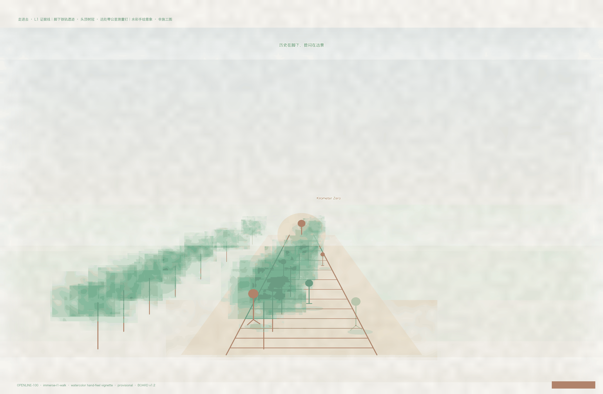
1. L1 证据线人视： 人走在可走铁轨上，头顶树冠连续，远处 Kilometer Zero 测量钉——历史在脚下，提问在远景。
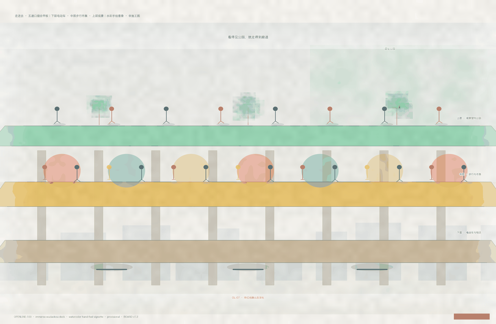
2. 五道口缝合甲板剖透视： 下层电动车与物流、中层步行市集、上层观景；声明「待红线确认后深化」——有争议但有力。
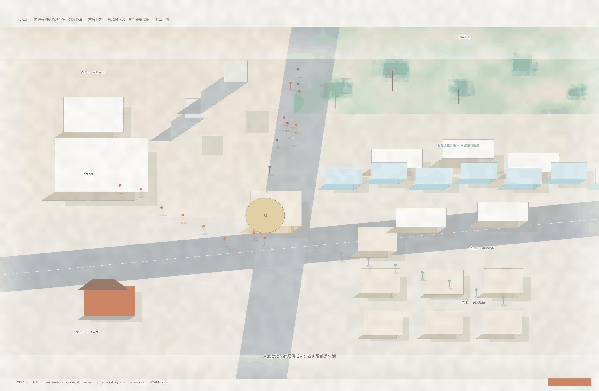
3. 大钟寺站域四象限： 西南街面入口、东南通学、西北古钟导视、东北买菜——Adoption 必须可抵达。图面若仍留上一轮站前图形，以本章街面规则为准，待整包重渲。
原点转化街不再另做第四张水彩。地点剖面 key-eyes 02 切开看见授权窗口与 KM0；失败案例库是卡 01 的继承接口，不是 104 ha 的全部。官方约 3 km² 不以征集重点区替代。
物质遗产五种转译｜让铁轨「长」进空间
不要只写「遗产廊道」——铁轨必须变成可触、可坐、可问、可听的城市构件；评审必须看见京张的钢轨扎进土地肌理 深度 空间数据：
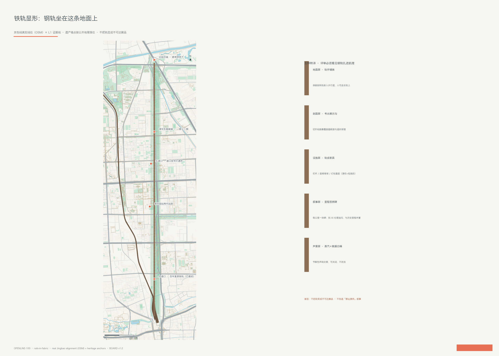
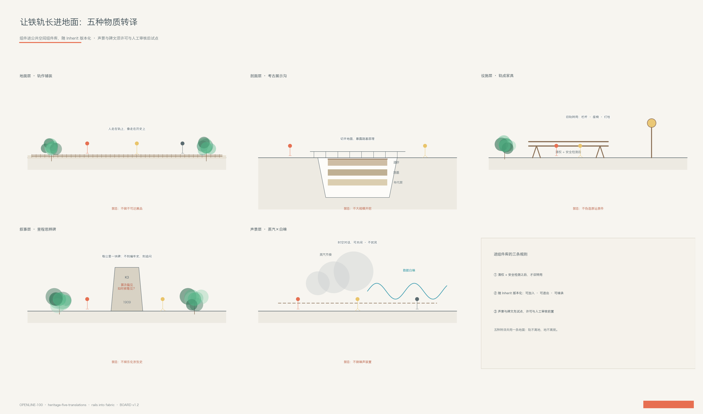
| 层 | 转译动作 | 空间做法（概念） | 禁忌 |
|---|---|---|---|
| 地面层 | 轨作铺装 | 保留段铁轨不做围栏隔离，嵌入步行道；人可走在轨上，像走在历史上 | 不把轨变成不可达展品 |
| 剖面层 | 考古式展示沟 | 关键节点切开地面，暴露原始路基断面与道砟层理，加护栏与解说 | 不大规模开挖未评估区 |
| 设施层 | 轨成家具结构 | 旧轨转用为栏杆、座椅骨架、灯柱基座（清权与安全检测后） | 不伪造「原址原件」叙事 |
| 叙事层 | 里程思辨碑 | 约每公里一块碑：不刻编年史，而刻 AI 伦理追问（如「算法偏见如何被看见？」），与历史里程并置 | 不娱乐化、不歪曲京张史 |
| 声景层 | 蒸汽节奏 × 数据白噪 | 选定段落保留或模拟蒸汽机车节奏性声响，与低音量数据流白噪交替，形成时空对话；可关闭 | 不做扰民噪声装置 |
组件进入公共空间组件库，随 Inherit 版本化；声景与碑文须许可与人工审核后试点。
五种转译是显形。开篇第三章「以人为轨」是显魂——考古分级 A/B/C、口述空位「＿」与三次转身见 heritage-soul。显形不另立第四套遗产品牌；人字坡只作铁路解剖学，不复活「人字轨」。
用地按国土空间分类语义完整覆盖提交边界、无缝无重叠，作为概念触媒分区而非法定图则 标准 空间数据 深度：
| 分区角色 | 意图 | Openline 关系 | 证据 |
|---|---|---|---|
| 西岸研发与协作带 | 全栈研发、开放提问、评测与开源协作 | 贴 L2 西侧，首层可协作/可发布 | 空间数据 |
| Openline 蓝绿公共脊 | 遗址公园活力带、慢行与树冠 | 承载 L1/L2 与两个地标 | 空间数据 |
| 东岸生活与转化带 | 人才生活、社区服务、近校转化 | 缝合线接入高校/社区腹地 | 见 land_use 分区图层 |
| 南端智能原生街 | 智能体 / 终端 / 内容消费、数据会客、国际交往 | 大钟寺重点区首层协议；站域四象限只做到达 | 空间数据 |
界面与首层协议（街区结构已知、地块强度未知时的城市设计替代工具）： Openline 两侧建议连续开放首层（展示/发布/服务），禁止长段封闭围墙；路口视距与无障碍连续；遮荫树列优先于装饰性铺装。以上为设计建议，待权属与图则确认。
更新类型学与建筑包络方法
建筑层仅表达概念节点包络，拆改留方法可谈、结论不可编 空间数据 深度：
| 类型 | 适用线索 | 设计动作 | 禁止事项 |
|---|---|---|---|
| 保留加固 | 大跨、院落、可改造结构 | 植入公共展示/协作 | 无测绘不写拆除 |
| 更新改造 | 首层封闭、界面消极 | 打开首层、接 Openline | 不改权属叙事 |
| 插建节点 | Openline 驿站、地标组件 | 低扰动、可逆、可退出 | 不伪报高度/FAR |
| 新建待研 | 正式控规与权属后 | 进入中期项目库 | 不写实施承诺 |
交通与新基建：市政、能源、端侧算力列为 Openline 驿站原型，不写工程线位 深度。风貌：官方管控 / 设计建议 / 待确认文保线三分开；缺文保范围时不做伪精确建设控制 标准。
重点区域详细设计
三处重点区均为 provisional 矩形占位，详细设计属方向性综合实施方案深度的概念建议；正式 polygon 到位后须重算面积、断面与项目库 深度。三区共用同一 Openline 语法，但制度、断面、公共组件与场景入口不同——这是「不是同一园区模板」的硬回答。

| 重点片区 | 主导任务 | 控规地位 | 核心空间产品 | 主要风险（待正式资料） |
|---|---|---|---|---|
| 众智园 | 全栈自主创新 + 全球治理 | 征集重点区必做；本份街区控规公开四至未覆盖（成府路以北 / 学北园） | 花园型创新街 · 可升级的城市主板（共享底板 + 可升级研发单元） | 正式边界/权属；基础设施容量；蓝线/防洪；学北园开放协议 |
| AI 原点 | 世界级 AI 创新生态 | 两心之一：五道口中心 | 创新策源地 · 策源过墙生态（转化街 + 开源发布 + 站点缝合） | 校园/业主权属与接驳 |
| 大钟寺 | 智能原生新业态 | 两心之一：大钟寺中心 | 智能原生街 The Native Street（首层业态协议；站域四象限为到达系统） | 业主首层协议；1733 权属；北三环交通；2027 站内通道工期 |
公告面积对照（讨论级）：众智园约 192.1 ha（复算约 192.9 ha）、原点约 104.3 ha、大钟寺约 72.0 ha 量级——以图层属性为准，矩形边不是地块红线 空间数据 指标。
中标级交付五件套（1:2000 推敲）
世界级城市设计中标包在重点区交的不是再一段概念，而是五张能上桌的硬图。本包按这个标准补齐；全部为 1:2000 级推敲，不是法定图则。正式 polygon / 红线 / 强度到位后整包复算，不把街廓当成审批几何 深度。
| 中标标准 | 本包图件 | 读图一句 | 诚实边界 |
|---|---|---|---|
| 总平面 1:2000 | key-plans-2000 | 同一语法，三种街廓：主板院落 / 转化街横切 / 街墙连续 | 渲染器生成街廓，不是地块图则 |
| 体量与天际线 | key-massing-skyline | 白模服从街廓；沿公园南→北不另立塔 | 高度取概念区间，z 轴夸张 |
| 3–5 处地点剖面 | key-eyes + 既有「走进去」 | 众智园院落 / 原点 KM0 / 五道口甲板 / 大钟寺站 / 清河是河 | 地点剖面，不是符号街 |
| 典型街道断面 | key-sections | L1 / L2 / 协作街 / 转化街 / 原生街面 / 甲板 | 非工程设计；步行全时 ≥50% |
| 分期实施图 | key-phasing + phasing-capital | 时间轴：0–1 试点 · 1–3 成街 · 3–10 网络；资本：每期同时回答建设 / 出钱 / 运营 / 回流 | 时间轴不是资金计划；资本图是量级闭环，非概算 |
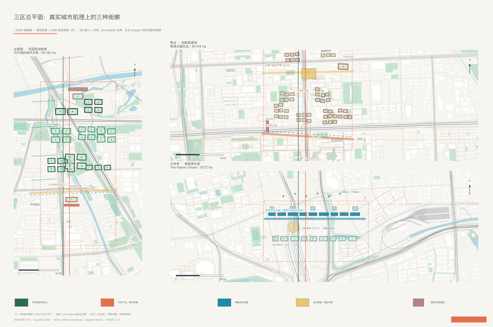
总平面怎么读： 北向上。众智园公园贴东（京张北段），全栈协作街东西贯穿院落群，治理中心对清河。原点公园居中，转化街横切，授权窗口在西近校缘，缝合甲板在五道口。大钟寺公园贴北，街墙向南连续，1733 与四象限是到达，不重做总部体量。编号 1–4 是片区产品，不是地块编号。
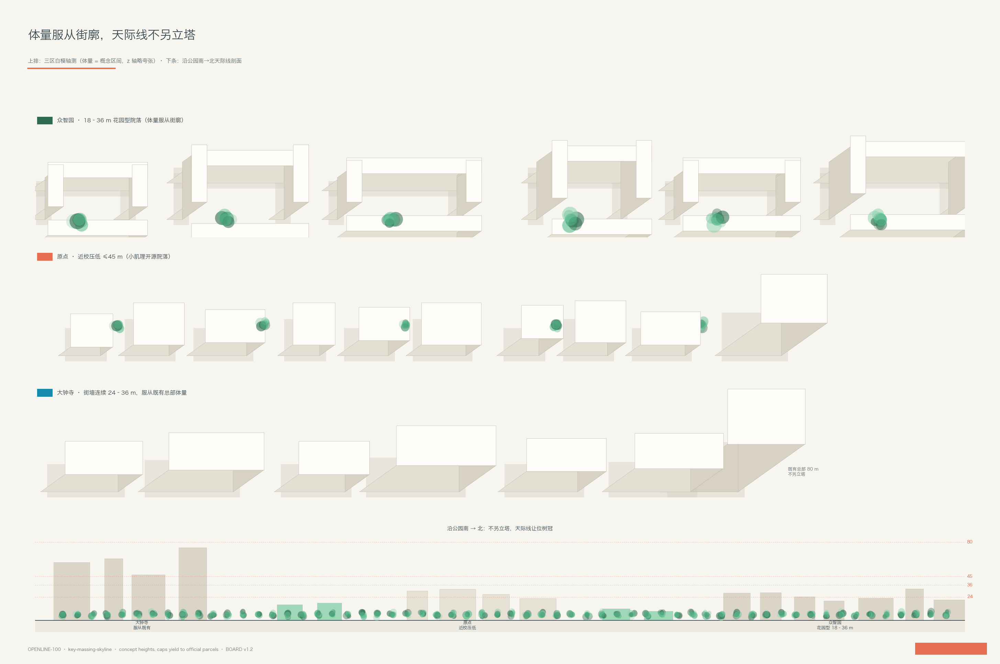
体量与天际线： 上排三区白模并置；下条沿公园南→北：大钟寺服从既有总部高度，原点近校压低，众智园 18–36 m 花园型，清河 / 五环收低。禁止用 60–80 m 新塔当朝圣地标。
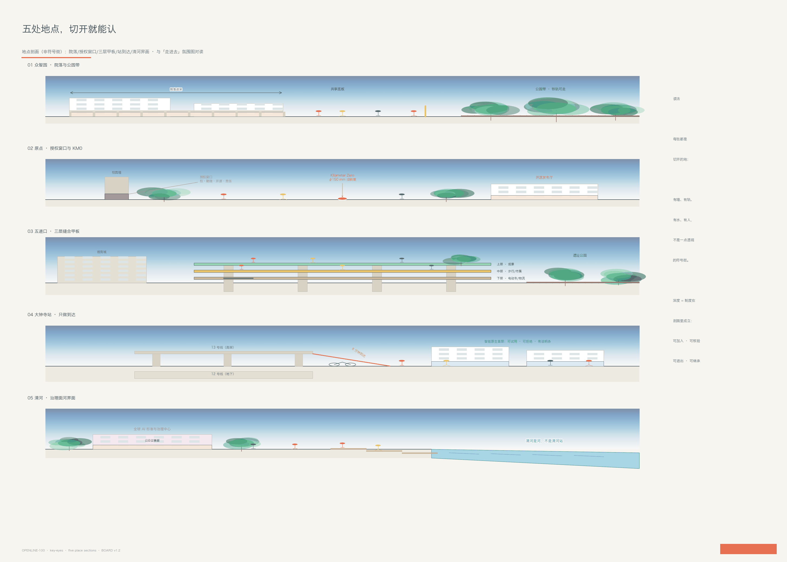
五处地点剖面： 01 众智园院落与公园带；02 原点墙上的授权窗口与街上的 KM0；03 五道口既有城 | L1 | 三层板 | 遗址公园（与 OL-07 横剖对读）；04 大钟寺站只做到达、首层可试用；05 清河是河，不是清河站。既有水彩「走进去」三图仍作氛围；本图是切开的地，不是一点透视符号街。
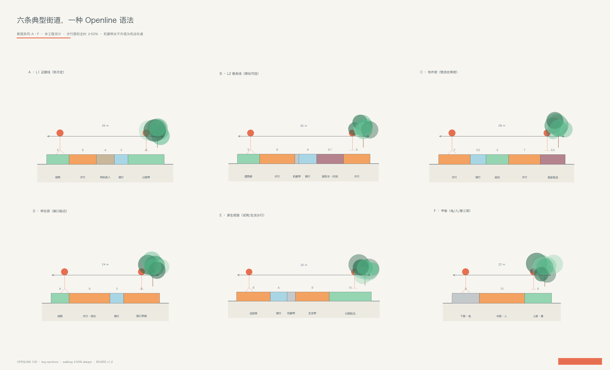
断面系列： A 证据线（轨可走）· B 服务线（驿站可挂）· C 协作街（物流在背街）· D 转化街（窗口贴边）· E 原生街面（试用 / 生活分行）· F 甲板（电 / 人 / 景）。机器带永不升级为机动车道。
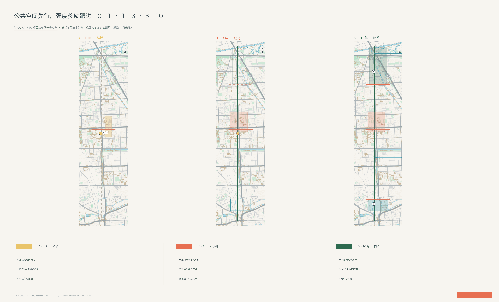
分期图： 时间轴见 key-phasing——0–1 年原点与到达面先动；1–3 年一组单元成街；3–10 年网络展开，OL-07 进中期库、待红线决策。资本闭环见 phasing-capital 与下文「分期资本逻辑」。与 OL 清单同一套动作，不另起分期故事。
众智园 · 花园型创新街（AI 自主创新加速区 · 可升级的城市主板）
真实使命与规划地位： 众智园不是以参观、消费或单次测试为主的科技园。任务书赋予它的核心职责，是建设 AI 全栈自主创新体系，并形成中国参与全球 AI 标准、安全与治理讨论的长期能力。它是征集范围最北部的必做重点区，公告面积约 192.1 ha，锚点为中关村东升科技园学北园，任务明确要求回应五环路、清河和花园型创新街区。2026-08-11 获批街区控规的公开四至北至成府路，未覆盖本片；这不影响详细设计继续开展，但不能把众智园写成该控规已批「第三心」 来源 来源 来源。
设计命题： AI 技术几年一代，城市空间几十年一代。若按今天的产业清单把每栋楼一次性写死，下一轮技术变化就会带来搬迁和反复拆建。众智园因此被设计成一块可升级的城市主板：长期稳定的是花园、慢行、服务交通、共享技术平台和治理接口；持续变化的是研发团队、实验室配置、设备与应用场景。它不是把电路板造型贴到地面，而是一条规划规则：共享底板保持稳定，技术单元持续更新；让 AI 上下游成为步行可达的邻居，让每次升级都有标准与责任接口。 深度
现状不是白纸（A 级，不重做）：
| 对象 | 已建成 / 已公布 | 城市主板的增量 | 禁忌 |
|---|---|---|---|
| 公园二期北段 | 2026-08-06 开园；清华东路—北五环箭亭桥，2.6 km / 30.01 ha；含京张之环、步行/慢跑/骑行三道、乡土植物科普园、林下剧场与球场 | 作为共享绿色底板，研发组团从边缘接入，不占廊心 | 不重画京张之环、铁轨步道与三道一绿 |
| 鱼骨慢行 / 桥下 | 3 条鱼骨状通道盘活箭亭桥、13 号线高架桥下；公园与清河绿廊东西互通 | 作为全栈协作街的既有横向接口 | 不另画一套慢行系统 |
| 清河滨水绿廊 | 已与公园互通；任务书要求挖掘清河文化 | 布置国际治理与低碳交往的公共界面 | 蓝线未定不做假退线；不做个人追踪 |
| 学北园 / 东升科技园 | 海淀 2026-03 锚点；学清路×月泉路；昌平线学知园站 | 作为首发主板：共享首层、可升级研发单元和公共技术平台优先利用存量空间 | 不重做园区总图；不声称已获业主同意 |
| 北五环箭亭桥 | 公园北尽端；任务书要求结合五环路区域一体化 | 研究人才、设备与生产服务的对外联系及桥下兼容性场景 | 不改五环主线；不报互通式立交或上路许可 |
空间公式：一块共享底板 · 五类可升级单元 · 一条全栈协作街 · 一个全球治理中心
共享底板是长期不重复建设的公共能力：连续花园与无障碍慢行、公共首层、共享会议与工程服务、设备物流和维护接口，以及经授权的算力、数据、网络、能源和安全服务。底板不等于把所有基础设施集中进一栋楼，而是让不同组团能够按统一接口接入、退出和升级。
五类可升级创新单元把全栈关系变成邻里关系，而不是五座彼此封闭的园区。单元边界可随技术演进调整，名称表达当前任务而非永久用地性质 空间数据 空间数据：
| 可升级单元 | 当前全栈任务 | 共享空间配置 |
|---|---|---|
| 芯片与算力协同 | 芯片、计算系统、端侧基础设施及能效协同 | 可适配技术大厅、共享装卸与运维接口 |
| 基础软件与工具链 | 基础软件、开发框架、工程工具与互操作 | 联合工程工作室、兼容性空间与安全协作室 |
| 数据与模型 | 基础/行业模型、数据治理、训练与评估 | 受控数据空间、模型工作室、人工复核与文档接口 |
| 智能体与行业应用 | 城市智能体、企业智能体、应用集成与服务设计 | 场景工作室、运营室、跨团队协作空间 |
| 具身智能与场景 | 机器人、端侧设备及受控场景集成 | 可重组场地、安全隔离、设备工位与操作员界面 |
全栈协作街从学知园站、学北园共享首层接到既有鱼骨慢行、公园北段、清河与箭亭桥。它是研发协作、人才服务、设备预约、成果发布与公共沟通的共同地址，不是新造一条仪式性大道。五类单元的公共首层面向同一条街，共享会议室、组件库、餐饮休息和技术服务放在相邻单元之间，让上游部件到下游应用不再经历一串门禁。
全球 AI 标准与治理中心与研发单元并列为核心功能，面向清河公共界面设置标准工作坊、安全与伦理协作、开源治理、国际论坛、人工复核和公众资料空间。它不是偶尔启用的会议中心或荣誉展厅；主要产出应是双语标准草案、接口规范、事件复盘、责任记录与可复用治理组件。每个技术单元升级前，都要在这里说明系统边界、数据权利、责任主体、人工复核点、维护责任与退役路径 标准。
城市与建筑如何跟着团队成长
团队的成长路径不再是「孵化器毕业后搬走」，而是：进入共享底板 → 使用小型研发单元 → 接入公共技术平台 → 扩展为联合实验室或工程团队 → 完成标准、安全与风险协同 → 扩展为独立楼层、楼栋或专业组团。 收缩与退出同样被设计：团队归还部分单元，设备与数据按协议迁出，空间恢复到可再次使用的标准状态。
| 层 | 长期稳定的部分 | 可以持续升级的部分 |
|---|---|---|
| 城市底板 | 慢行与无障碍、公共界面、消防与服务通道、蓝绿空间 | 可逆家具、活动与局部场地组织 |
| 建筑底板 | 可保留的大跨结构、院落、结构网格与核心筒 | 隔墙、实验室配置、共享工作室与首层界面 |
| 技术层 | 标准化的装卸、维护、网络与安全接口 | 计算模块、设备工位、受控房间与软硬件环境 |
| 治理层 | 责任记录、人工复核、公共说明、事件与退役程序 | 标准版本、评估方法与协作议题 |
拆改留先看测绘与结构条件：大跨与院落优先保留，封闭首层在业主协议下分时打开；新增技术空间优先采用可维护、可替换的构造。一次技术换代应尽量只更换模块和内部配置，而不是重建一个园区 深度。
五个在地空间动作
1. 以学北园为首发主板，不重造校园。 盘点现有楼宇、院落和共享设施，选择可改造首层作为共享技术与人才服务入口；设备物流从服务侧进入，公共慢行从花园侧进入。 2. 接上现有鱼骨慢行，不另画一套道路。 全栈协作街利用学知园站—月泉路—学北园—公园北段—清河的既有关系补齐断点，访客、员工、设备物流与应急流线分层组织 空间数据。 3. 让五类单元沿同一条工作街相邻。 研发空间可以重组，公共技术平台和会议服务放在单元交界处；创新发生在接口，而不是各自门禁后的孤岛。 4. 把全球治理放进研发过程。 治理中心紧贴技术单元和清河花园界面，标准、安全、伦理与国际协作从项目早期介入，而不是产品完成后的补审。 5. 把花园作为创新基础设施。 公园和清河承担降温、雨洪、慢行、户外讨论、国际交往与人才日常生活；产业展示嵌入共享首层，只展示经授权成果、标准演进与治理贡献，不做科技主题乐园 空间数据。
15 分钟城市主板路径（讨论级）： 学知园站 → 月泉路共享门厅 → 学北园公共技术平台 → 可升级单元样板庭院 → 全球 AI 标准与治理中心 → 清河花园客厅 → 公园北段。对访客，它应讲清「底层能力—工程工具—模型与智能体—应用—标准治理」的完整关系；对工作者，它意味着从研发单元步行可达共享平台、治理服务、轨道入口和花园休息空间。正式道路红线、门禁和权属到位后再实测，走不通就调整入口，不在图上宣布完成。
北五环 / 箭亭桥（对外联系与生产服务研究）
│
清河花园 ─ 全球 AI 标准与治理中心 ─ 公园北段 / 既有鱼骨慢行
│
芯片算力 ─ 基础软件 ─ 数据模型 ─ 智能体应用 ─ 具身场景
╲──── 全栈协作街 / 共享底板 ────╱
│
学北园共享首层 / 学知园站公共空间与场景接口： 共享工作庭院、可预约会议与工程服务、组件库、无障碍环线、多语导视、遮荫、清河文化与低碳展示。S-02 安全治理沙盒作为受控技术工具嵌入治理中心与具身单元；S-06 清河低碳创新廊成为共享绿色底板。卡 03 写的是时间分层，不是园区导览：共享底板是不变层，五类单元是可变层，治理门是许可层。治理中心的公众议事廊是治理门的公众面（遗憾条款、地层墙），不再当众智园名片。15 分钟路径只检验换代后是否仍可读。学北园约 3.53 ha 是种子，不是征集重点区 192 ha。
成功判据： 技术模块能否在不重建街区的情况下升级；小团队能否在园内扩展、收缩或退出；上下游团队能否共享一条连续工作环境；每个进入场景的系统是否都有明确的人工复核与责任接口；公众能否在不进入受控实验室的前提下理解全栈体系如何工作。
诚实边界： 当前没有众智园官方精确 polygon、地块图则、权属、蓝线、道路红线和经核验的建筑/市政容量。本节不声称业主同意、国家平台落地、运营主体确定、工程获批或具身智能获准上路；算力、能源、消防、数据安全和防洪需求须在正式资料和专业专项到位后校核 空间数据。
分期： 0–1 年完成建筑、接口、设施容量与权属普查，接续既有慢行，启动共享门厅、开发者工作坊和标准议题的轻量试点；1–3 年改造一组可升级研发单元，启动一处公共技术平台和轻量治理中心，实测 15 分钟路径与团队扩缩容过程；3–10 年在正式边界、强度、能源、市政、安全与运营责任确认后扩展五类单元网络和全球治理中心，并深化五环区域交通联系 深度。
北京 AI 原点社区 · 创新策源地（Open Question · 可提问）
定位： 近校型开源协作与成果转化社区——这里回答「问题如何被公开提出、人才如何留下来协作」。规划地位： 对位已批两心中的五道口中心（人工智能产业创新集聚区、顶尖人才交流中心，草案公开口径）；与官方「AI 原点社区 · 创业首选」同核，不另立地名 来源。
设计命题： 任务书给原点的是世界级 AI 创新生态。官方三个产品是全球首发地、栖息地、全要素生态服务站；政策层已经说尽。本区回答政策买不到的空间问题——实验室成果如何过墙。近校转化、开源发布、人才停留是片区工作。一句话：不经授权窗口，校园成果不能上街。 官方约 3 km²（五道口核心）不以征集重点区约 104 ha 替代。
片区概括是创新策源地——官方定位「创新策源、创业首选」的空间落实；片区产品是策源过墙生态。卡 01 写的不是走廊观光，而是策源过墙的必要关系（附录 C-1）：权→配→证→用→遗。约 200 m 走廊只是切片，不是 104 ha 的名字。Kilometer Zero 退成缝合甲板上的测量钉（讨论 φ150 mm，旧轨钢），不是仪式广场 空间数据 空间数据。
五个必要环节（概念，非正式控规；对位卡 01；跳过任一步原点只是近校园区）：
1. 权（授权窗口）。 过墙捆绑的是许可，不是人流：使用范围、期限、可否开源、出事找谁。没有许可条，匹配与首发都是违法或违约。不得声称已获高校或业主同意 空间数据。 2. 配（八找并置）。 政策、资金、算力、人才、伙伴、智力、空间、场景必须在步行内成交。跑四个园区才找齐，全要素服务站就是目录。栖息地挂在匹配边上，让人留得够久把八找做完，不另起创业宿舍品牌。 3. 证（开源 / 首发）。 官方「全球首发地」只在公开、可失败的声称里成立。关起门转化是技术转移办公室，不是策源地。独立运营见 S-01。 4. 用（社区微场景）。 食堂、配送、导览、物业做真实交易。没有非表演客户，首发是路演。脱敏摘要回流众智园，供卡 03 升级许可。 5. 遗（失败案例库）+ 缝合甲板。 失败不留给下一届，生态每届清零。记录可撤、可改写。OL-07 把校园侧接到街上——谁能不走甲板从学校进公园，墙还在，只是没被设计。
成功判据： 不经授权窗口校园成果能否上街（必须不能）；八找是否必须跑四个园区（必须不必）；不走缝合甲板能否从校园进公园（必须不能）；3 km² 官方口径是否被画进 104 ha（必须没有）。 诚实边界： 甲板待红线与桥墩权属；授权窗口与失败案例库落在社区界面，须业主、街道与高校协议；不把平面符号再写成地标。
大钟寺 · 智能原生街 The Native Street（Open Adoption · 智能原生新业态）
定位： 城市型人工智能创新街区——任务书要求这里承载智能体、智能终端、内容消费等 AI 原生与 AI+ 融合业态，并探索数据要素流通与国际交往。规划地位： 对位已批两心中的大钟寺中心（互联网和相关服务业、人工智能、新媒体，草案公开口径）。它不是再造一座封闭园区，也不是用站前装置冒充 72 ha 重点区 来源 来源 来源。
设计命题： 众智园把能力做出来并管住；原点把问题公开并提出；大钟寺必须让没预约的人在街上碰上已经核验过的东西——能试用、能买、能订、能拒绝。一句话：核验过的能力，必须能上街。 这是规划规则，不是地面图形。
签名产品是 智能原生街 The Native Street：领军企业周边、1733 既有商业、公园贴边共享一条首层协议。站一体化与路口四象限是到达系统（任务书必做），不是全区的名字。公开议事用街面与 1733 既有可预约厅，不另立纪念物。不仿钟、不做钟形屋顶、不把商场中庭改名、不把字节跳动写成已签约业主。
现状不是白纸（A 级，不重做）：
| 对象 | 已建成 / 已公布 | 本方案增量落点 | 禁忌 |
|---|---|---|---|
| 领军企业 / 1733 | 北三环西路甲 18 号；约 3.8 万 m² 商业；12 号线 D 口在馆内 | 首层智能原生协议；数据要素会客与国际路演用既有可预约厅（S-05 / S-08） | 不改写字楼；不声称业主已同意 |
| 12 / 13 换乘 | 站内通道暂缓至约 2027-12；站外约 8 分钟：D 口 → 1733 东端 → 楼梯上地面 → 13 号线 A/B；30 分钟连续计费 | 到达系统 OL-04：24h 公共通行协议（非征收）、东端无障碍 P0、路口四象限步行、四角非机动车泊位 | 不把 2027 站内通道画成本方案交付；不挖新隧；不把换乘廊写成全区产品 |
| 公园二期南段 | 2026-08-06 开园；三环门户城市阳台 | 规划绿地复合利用：阳台与贴边承接街面溢出，不占廊心 | 不重画复原铁轨、龙门吊、三环阳台 |
| 13 号线桥下 | 既有桥下；二期已盘活部分 | 接四象限慢行，一种铺装与照明连续到街面 | 不改桥梁结构、不报跨度 |
| 大钟寺古钟博物馆 | 甲 31 号，永乐大钟 | 过街导视；寺是听钟，街面是用 | 不仿造大钟装置；不用金色仿铜 |
五个空间动作（概念，非正式控规；对位任务书大钟寺条款）：
1. 智能原生首层（片区规则）。 沿总部界面、1733 外沿、公园贴边，建议连续开放首层：智能体服务窗口、终端试用、内容放映/零售。试用必须可拒绝、可退出；没有「谁核验、失败过什么、出了事找谁」的说明条，不准上街。不指定品牌，不编造招商 空间数据。 2. 数据要素与国际会客。 用 1733 既有可预约厅承接数据要素会客（S-08）与国际路演（S-05）。西翼科技服务翼提供 IP / 资本 / 许可接口，不在大钟寺另造基金大厦。 3. 站域一体 + 路口四象限（到达，不是身份）。 优化大钟寺站与重点地块连通：既有 8 分钟路径保持公共通行；东端楼梯改坡道+电梯为 P0；北三环西路 × 京包铁路桥四象限步行；四角非机动车停放。2027 年后站内归地铁，街面规则留下（assumptions A-DAZHONGSI-1733-001）。 4. 规划绿地复合利用。 公园贴边做可逆插入的展示与停留，服务企业交往与通勤间歇；不占已开放廊心，不种大树在 1733 结构上。 5. 社区开口。 东南通学、西北古钟导视、东北买菜短径。不改建三环主线。社区墙开口做 20 分钟生活路径。
| 象限 | 现状锚点 | 步行动作 |
|---|---|---|
| 西南 | 13 号线站 + 1733 + 总部校园 | 智能原生街入口；站到达 |
| 东南 | 太阳园 / 蓝景丽家 / 中关村四小；12 号线 E 口 | 通学过街；自行车泊位 |
| 西北 | 过街天桥北、往古钟博物馆 | 导视与遮荫，不仿钟 |
| 东北 | 北三环北侧社区 / 公园贴边 | 买菜短径，接二期鱼骨慢行 |
8 分钟到达路线（讨论，对位众智园 15 分钟主板路径）： 12 号线 D 口 → 1733 既有路径 → 上地面进入街面（Join）→ 试用或路过一件已核验业态（Verify / Adoption）→ 可走开（Exit）→ 13 号线或四象限生活路径（Inherit）。被营业切断、只能进封闭厅才能碰到业态，都不算街面成立。
西翼科技服务（IP / 资本 / 标准）──┐
小月河场景题 ── 原点转化 ── 众智园治理复核 ──► 大钟寺智能原生街
│
12号线 D口 ── 1733 公共通行 ── 四象限步行 ── 13号线 A/B
（到达系统，不是全区名字）诚实边界： 首层协议须业主与街道同意；24h 廊与无障碍须业主+地铁+街道协议；四象限过街须交通组织；2027 工期不是本方案工程；不报容积率；不把字节跳动写成实施主体；街面不是广告廊。
分期： 0–1 年首层试点界面（一处企业边 + 1733 外沿）、24h 通行与无障碍协议、四象限过街研究；1–3 年街面连续、数据会客与路演节奏、社区开口；2027 年后站内归地铁，街面规则留下。
公共空间组件： 可拒绝试用位、说明条、可移动座椅、行李坐凳、多语导视、四角自行车架。 AI 场景入口： S-05 / S-08 在既有厅；街面承接终端与内容消费的可退出试用。 成功判据： 不进封闭厅能否碰到一件可试用、可拒绝的业态（必须能）；没预约 10 分钟内能否碰上（必须能）；四象限步行是否被车行切断；营业是否切断到达路径；有没有未写责任接口的展示（必须没有）。深度场景即卡 02（附录 C-2）。 节点放大（概念）： 街面首层展开 + 站域四象限平面；材质：暗铜只作收边、暖木坐面、米白导视。不把站前高差做成全区地标。
AI 创新生态、人才画像与 AI+ 场景
Openline 的用户不是「被管理的对象」，而是可持开放规则进入/退出的参与者。下列画像与场景卡均为概念建议，含隐私边界与人工复核 来源。
场景系统的取舍：宁深勿广，且 1:1 对三重点区。 定位已钉死：卡 01 = 原点策源过墙，卡 02 = 大钟寺街面采用，卡 03 = 众智园全栈升级。深度不在「一天走五站」，而在每区的生产逻辑——少一步即假。卡 01 是因果链（权→配→证→用→遗）；卡 02 是并置（街面法则 ‖ 下街例外 ‖ 生活剩余），到达只检验法则能否被路过；卡 03 是时间分层（不变层 / 可变层 / 许可层），15 分钟只检验换代后是否仍可读。其余十项仍是一行场景索引（S-01–S-10）。未呼先应降到东翼索引 S-09。任务书「不少于 3 张产业测试验证场景」由卡 02 街面试用、卡 03 升级许可与治理门，以及索引 S-02、S-03、S-08 共同承接。
| 用户画像 | 典型需求 | 空间响应 | 自检边界 |
|---|---|---|---|
| 开源开发者 | 发布、协作、声誉 | 原点开源发布厅、公共代码墙 | 不采个人轨迹；活动仅聚合统计 |
| 初创团队 | 低成本试验与算力入口 | 众智园共享技术平台、可升级研发单元与端侧驿站概念点 | 算力/数据须另行授权 |
| 头部企业访客 | 展示、路演、招聘 | 1733 既有可预约厅 / 公园贴边可逆插入 | 企业标识须清权；不声称业主已同意 |
| 周边居民 | 通勤、休闲、低扰动 | Openline 慢行、社区服务嵌入 | 居民画像不作商业推荐 |
| 高校师生 | 转化、跨校协作 | 近校转化街、教育体验点 | 校园与科研成果须授权 |
| 国际参访者 | 短路径理解一带 | 朝圣地标路线 + 多语导视 | 不采集护照级身份作默认条件 |
| 社区居民（老/中/幼） | 社区微场景、通学买菜、日常治理参与 | 原点社区微场景首批用户（知情同意）、大钟寺四象限生活路径、众智园治理门旁听、东翼 S-09 驿站 | 健康数据本地存储；服务不采集轨迹；人工始终在场；退出权随时行使 |
三张全深度场景卡
| 卡 | 主题 | 一句话概念 | 生产逻辑（少一步即假） | 规则链 | 详案 |
|---|---|---|---|---|---|
| 01 AI+原点社区 · 策源如何过墙 | 世界级创新生态 | 不经授权窗口，校园成果不能上街 | 权→配→证→用→遗：无授权则匹配非法；匹配不在步行内则八找是目录；无公开首发则不是策源地；无真实交易则首发是表演；失败不继承则每届清零 | Join → Verify → Exit → Inherit | 附录 C-1 |
| 02 大钟寺 · 核验过的能力必须能上街 | 智能原生新业态 | 没预约也能试用、能拒绝；营业不切断公共通行 | 街面法则 ‖ 下街例外 ‖ 生活剩余（三层并置，不是五站观光）：无说明条=广告廊；数据摊上街=泄露；四象限被吃=产业园冒充街区；8 分钟到达只检验法则能否被路过 | Join → Verify → Exit → Inherit | 附录 C-2 |
| 03 众智园 · 全栈如何升级而不拆城 | 全栈自主 + 全球治理 | 小团队能扩缩退；换代不拆街；无通行证也能看懂全栈 | 不变层 / 可变层 / 许可层：底板不稳则换代拆城；单元无门则换代无人负责；门无公众面则国家平台是黑盒；15 分钟只检验换代后是否仍可读 | Verify → Exit → Inherit | 附录 C-3 |
场景索引 S-01–S-10（一行一项）
| 编号 | 场景 | 类型 | 空间载体 | 一句话 |
|---|---|---|---|---|
| S-01 | 开源发布厅 | 产业协作 | 原点社区 | 卡 01 开源/首发的独立运营形态：公开议程、人工主持 |
| S-02 | 安全治理沙盒 | 测试验证 | 众智园治理中心 + 具身智能单元的受控场地 | 脱敏评测集 + 专家复核；公众说明界面可见，受控区不可闯入 |
| S-03 | 端侧算力驿站 | 测试验证 | Openline 服务节点 | 端侧原型与能耗日志；与 S-09 共享空间、物理隔离 |
| S-04 | AI 慢行导航 | 交通生活 | Openline 主脊 | 仅聚合拥堵数据，默认可关闭 |
| S-05 | 国际路演客厅 | 产业交往 | 大钟寺 · 1733 既有可预约厅 | 预约制、内容清权；不新建塔楼 |
| S-06 | 清河低碳创新廊 | 公共空间 | 众智园共享绿色底板 · 清河界面 | 环境传感公开、人工巡检，向小月河翼延伸 |
| S-07 | 近校成果转化街 | 转化服务 | 原点 | 授权窗口—原型工坊—发布厅连续界面 |
| S-08 | 数据要素会客厅 | 测试验证 | 大钟寺 · 1733 既有可预约厅 | 授权清单 + 审计追踪 + 合规顾问窗口 |
| S-09 | 未呼先应 | 公共服务 | 小月河翼 · Openline 驿站网络 | 听懂 / 想到 / 办妥；红色「我要跟人说话」召唤钮；工单直转 12345；不占三区深度卡 |
| S-10 | 全球 AI 活动周路线 | 文化运营 | 一带公共系统 | 活动许可 + 安全预案，组件随 Inherit 版本化 |
场景卡 01｜AI+原点社区 · 策源如何过墙（摘要 · 详案见附录 C-1）
核心概念：原点生产的是可过墙的策源，不是近校园区。 官方三个产品（全球首发地、栖息地、全要素生态服务站）政策层已经说尽。本卡写的是它们之间的必要关系：没有授权，八找是非法匹配；八找不在步行内，全要素服务站是目录；没有可失败的公开首发，全球首发地是会场；没有社区真实交易，首发是表演；失败不留给下一届，生态每届清零。空间只是这五环的落点，200 m 走廊是切片。官方约 3 km² 不以 104 ha 替代。完整因果链与自检见附录 C-1。
场景卡 02｜大钟寺 · 核验过的能力必须能上街（摘要 · 详案见附录 C-2）
核心概念：大钟寺生产的是可拒绝的采用，不是站前观光。 城市型街区的深度在三层并置：街面法则（核验过的能力占用首层，说明条四项，可试用可拒绝）；下街例外（数据要素与国际交往进 1733 可预约厅——不是下一站，是不准上街的东西的收容）；生活剩余（通学 / 买菜 / 古钟导视不可让渡）。8 分钟到达只检验法则能否被路过；营业切断，法则对员工有效、对城市无效。完整分层与自检见附录 C-2。
场景卡 03｜众智园 · 全栈如何升级而不拆城（摘要 · 详案见附录 C-3）
核心概念：众智园生产的是可许可的换代，不是 15 分钟园区导览。 深度在时间分层：共享底板是不变层（换的是模块，不是街区）；五类单元是可变层（小团队扩缩退写进邻里）；治理门是许可层（换代的唯一合法入口；遗憾条款与地层墙让失败的升级仍承重）。无通行证能读懂全栈，是换代之后城市仍可被理解，不是博物馆。15 分钟路径只检验这套分层换代后是否仍可读。学北园约 3.53 ha 不以 192 ha 替代。完整分层与自检见附录 C-3。
小月河场景赋能翼： 任务书东翼在此落地。S-06 清河界面延伸至小月河廊，形成「出题—漫步—公共体验」路径，承接 AI+ 医疗 / 教育 / 法律 / 生活等场景试题（可关闭、须人工复核）。S-09 未呼先应落在东翼驿站网络（约 3–4 节点，间距 800–1000 m）：听懂、想到、办妥；红色「我要跟人说话」召唤钮；办不了的生成规范工单直转 12345。它与西翼科技服务对称，不占三区深度卡，也不把大钟寺站写成东翼 深度。五域试题的沿河站点分布（E-01–E-04）、元土城—蓟门烟树遗产层对位与端侧算力驿站建筑概念，详案见统筹研究章「两翼深化设计」；现场核验清单已增补 P-09 / P-10。
场景空间落到公共空间与道路层 空间数据 空间数据 指标。城市智能体可辅助识别断点与维护需求，不得替代审批，不得输出未授权个人画像。
用地、建筑规模与拆改留方案
用地按国土空间分类语义完整覆盖提交边界、无缝无重叠，作为概念触媒分区而非法定图则 标准 空间数据。当前概念绿地率约 20%、公共空间率约 8%，用于讨论 Openline 日常承载力。街区控规已批但绿地率法定值仍未随公开新闻发布，本表不把 1668.2 ha 控规范围与 1141 ha 提交足迹直接相除——两套四至不同，不可混算 指标 指标 来源。
建筑基底为 Openline 节点概念包络，合计约 48.2 万 m²，不等于法定建设规模；容积率、建筑密度、建筑高度的地块控制值一律 unknown，待正式图则——但概念量级可以而且应该给：下文用地平衡表与强度区间以区间、假设与复算方法的形式给出讨论级量级，不伪精确 指标 深度。拆改留只提供方法：先锁定文保与权属，再谈保留/改造/更新/新建；无现状测绘前不输出地块级结论。存量更新优先对位控规「老旧厂房改造、低效楼宇更新」路径 深度 空间数据 来源。
概念级用地平衡表（讨论级 · 可复算）
面积来自 geometry/land_use.geojson 五分区声明值（provisional，EPSG:4548 复算口径）；占比以提交边界 ≈1141.3 ha 为分母；分类代码为图层声明代码，对应国土空间分类语义、非法定图则 空间数据 指标 标准：
| 分区 | 图层声明代码 | 面积（ha，约） | 占比 | Openline 角色 |
|---|---|---|---|---|
| LU-001 西岸研发与协作带 | 0802 | ≈138.3 | ≈12.1% | 全栈研发、评测、开放提问与开源协作 |
| LU-002 Openline 蓝绿公共脊 | 1401 | ≈258.6 | ≈22.7% | 遗址公园活力带，承载 L1/L2 与地标 |
| LU-003 文脉与公共文化界面 | 0803 | ≈220.1 | ≈19.3% | L1 证据线两侧遗产叙事界面 |
| LU-004 南端智能原生街 | 05 | ≈297.8 | ≈26.1% | 智能体 / 终端 / 内容消费；站域只做到达 |
| LU-005 东岸社区服务与生活配套带 | 0702 | ≈226.5 | ≈19.8% | 人才生活、社区服务、近校转化 |
| 合计 | — | ≈1141.3 | 100% | 与提交边界闭合（误差 <0.1%） |
校验行： 概念绿地 ≈227.8 ha（20.0%）主要落在 LU-002 及各分区附属绿地 指标；公共空间 ≈90.1 ha（7.9%）指标；概念建筑基底 48.2 万 m² 仅 ≈4.2%，为节点包络占位、非法定密度 指标。
开发强度区间（概念建议 · 上限服从正式图则）
原则：不给单值、给区间；街区结构服从已批控规公开文本；区间上限永远服从未来公布的地块图则；界面与首层规则先于强度生效 深度 来源：
| 分区 | 容积率区间（概念） | 建筑高度引导（概念） | 建筑密度区间 | 首层/界面硬规则 |
|---|---|---|---|---|
| LU-001 研发与协作带 | 1.2–1.8 | 基准 18–36 m，标志节点 ≤45 m | 20–30% | 首层开放率 ≥60%；连续封闭围墙 ≤50 m |
| LU-002 蓝绿公共脊 | ≤0.05（仅驿站/地标插建） | ≤12 m | ≤3% | 全部构件低扰动、可逆、可退出 |
| LU-003 文脉与公共文化界面 | 0.8–1.5 | 基准 ≤24 m，临遗产界面 12–18 m | 15–25% | 遗产视廊优先于体量 |
| LU-004 南端智能原生街 | 2.0–3.0 | 分区 45–80 m；服从既有 1733 / 总部体量，不另立地标塔 | 30–40% | 首层可试用可拒绝；四象限步行优先；1733 既有路径 24h 公共通行（协议，非征收） |
| LU-005 社区服务与生活配套带 | 1.5–2.2 | 基准 18–45 m | 25–35% | 生活样板街首层混合开放 |
总量推算（概念量级）： 按区间低—高值折算，总建筑面积 ≈1300–2000 万 m²（中值 ≈1600 万 m²），总体毛容积率 ≈1.1–1.7；按密度中值折算建筑基底 ≈250–330 万 m²——远大于现行 48.2 万 m² 节点包络，证明包络只是节点占位、不是总量承诺。按北京同类街区就业与居住密度折算，就业岗位量级 ≈8–15 万个、居住人口量级 ≈4–7 万人（均为概念量级，进入 assumptions 待校核）。
三处重点区强度建议（与公告面积对照；控规地位分列）：
| 重点区 | 公告面积（约） | 控规地位 | 容积率区间（概念） | 高度引导（概念） | 备注 | | --- | --- | --- | --- | --- | | 众智园 · 可升级的城市主板 | ≈192.1 ha | 征集必做 / 本份街区控规公开四至未覆盖 | 1.0–1.6 | ≤36 m，临河公共界面更低 | 数值仅作形态讨论；共享底板容量与强度走北段专项或后续街区控规校核 | | 原点 · Open Question | ≈104.3 ha | 两心 · 五道口 | 1.2–1.8 | ≤45 m | 近校界面，权属待清 | | 大钟寺 · Open Adoption | ≈72.0 ha | 两心 · 大钟寺 | 2.5–3.5 | 服从既有总部体量；不另立 60–80 m 地标塔 | 增量在地面 / 下沉层 / 路口；工程资料待补 |
复算方法（正式图则到位后）
1. 触发： 九街区正式 polygon / 地块图则 / 强度附件到位 → 整包重算（geometry → metrics → 图件 → HTML），不只换单个文件。公开新闻不是触发条件——2026-08-11 获批只触发本轮文本叠合，不触发几何重算。 2. 步骤： ① 以正式边界重切五分区面积并更新平衡表，分开登记控规 1668.2 ha 与提交足迹 1141 ha，禁止混分母；② 以区间中值推算总量，与法定限值比对；③ 超上限分区回调高度与密度；④ 平衡表合计校验 100% ±0.5%；⑤ 绿地率不低于现行概念值 20%，并校核一刻钟生活圈设施是否落入公共空间层。 3. 纪律： 本表只证明「方案有量级概念」，不构成强度承诺；区间上限若与正式图则冲突，一律以图则为准并公开记录调整原因。众智园的征集详细设计不因本份街区控规四至而降级；强度数字改走北段专项或后续街区控规校核。
交通、轨道、市政与公共服务设施
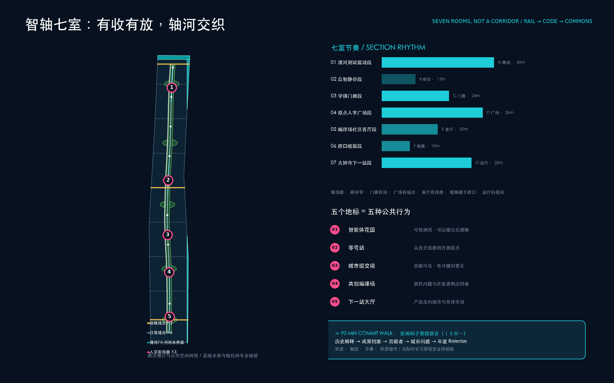
交通策略三句话：南北靠双线 Openline 贯通；东西靠缝合接高校、社区与站点；断点只标「问号」进入研究清单，但至少对最痛断点给出概念性工程方案——展示设计勇气，而非虚假精确 深度 空间数据。
概念断面逻辑（非工程设计）： L1 以步行为主、骑行为辅、树冠连续；L2 允许服务车与应急，仍慢行优先；缝合线在交叉口强调人行过街与视距，车行等级待红线。重点校核北五环跨线、五道口、清华东路西口、大钟寺站及企业周边——在 provisional 足迹内作为概念组织。
五道口缝合甲板（概念性工程方案）
选中缝合最痛断点——五道口：铁路与城市道路长期把两侧「看得见、走不通」。在尚无精确红线的前提下，提出结构概念方案，图脚强制声明「待红线确认后深化」深度。
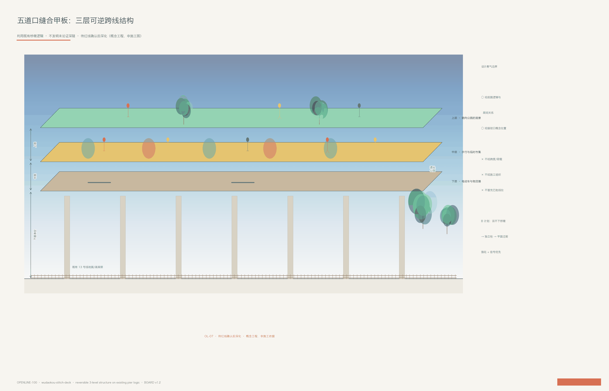
结构概念： 利用既有铁路桥墩（或同位置可承接的墩位逻辑）架设三层缝合甲板——不发明未论证的深隧，而做可逆、可分期的跨线公共结构：
| 层 | 功能 | 体验意图 |
|---|---|---|
| 下层 | 电动车与物流慢行通道 | 把冲突车流从步行层剥离 |
| 中层 | 步行、自行车与临时市集 | 日常缝合；可办近校/社区市集 |
| 上层 | 朝向京张遗址公园的观景平台 | 把「看得见公园」变成「走得到廊道」 |
设计勇气边界： 本方案给出剖面逻辑、层间关系与接驳口概念位置；不给出跨度、荷载、施工组织或已批准线位。文保、桥墩权属、道路红线与噪声控制到位后，整段进入工程深化；深化前仅作城市设计讨论武器。项目编号进入清单 OL-07。
市政与公共服务：创新服务平台、人才生活服务、分布式能源与端侧算力作为 Openline 驿站原型；管线、消防、防洪资料缺失时列为深化前置条件。constraints.geojson 刻意保持空集合并登记缺口，优于编造控制线 深度。
蓝绿空间、公共空间与城市风貌
蓝绿骨架以京张遗址公园产业创新带为叙事主脊（已批「一带」），清河/小月河为侧翼水文指纹；步道骑行与树冠廊道叠在 Openline 上，形成可南北走、东西透的公共空间系统。控规要求生活圈与创新圈融合的一刻钟社区服务圈——驿站网络（S-09）按 800–1000 m 间距布置，与此对位，不另发明一套生活圈 深度 空间数据 来源。二期已建成的 3 条鱼骨状慢行通道是北缝合的既有增量，Openline 接上它们，不重画。
生态的数字承诺：每期可核验的目标（目标承诺 · 监测闭环）
蓝绿不是形容词，是五个可核验的数。与分期资本逻辑同一纪律——写下来的数必须接监测闭环，不许只是口号。每期同时给出碳预算 / 径流控制率 / 热岛降幅 / 生物多样性净增益 / 树冠覆盖率 深度。

| 承诺 | 一期 2026–28 · 可逆示范段 | 二期 2028–31 · L1 成街 | 三期 2031–35 · 双线成网 | 怎么测 |
|---|---|---|---|---|
| 碳预算 | 隐含碳先封顶：再生/旧轨材料 ≥60%，建 2025 基线台账 | 运行碳强度 −25%（vs 2025 基线），能耗分项计量 | 运行碳强度 −40%，隐含碳持续封顶，全线碳账按季公开 | 材料台账 + 能耗分项计量 |
| 径流控制率 | 年径流总量控制率 75%：透水铺装 + 下凹绿地（北京海绵实践区间） | 80%：三缝合断面同步，L1 全线透水 | 85%：双线成网 + 清河侧翼 | 雨量 + 径流计量 |
| 热岛降幅 | 廊道夏季地表温度 −0.5 °C（vs 周边），传感廊起测 | −1.2 °C：树冠 + 水体 + 浅色铺装 | −2.0 °C：成网后稳定值 | 地表温度传感廊 |
| 生物多样性净增益 | 先测基线；新植乡土物种 ≥70%，样方样线建档 | 净增益 +5%（vs 基线） | +10%，年度复测公布 | 样方样线 + 年度遥感 |
| 树冠覆盖率 | 25%（新植 + 保留并计） | 30% | 35% | 年度遥感 + 普查 |
监测闭环： L1 传感杆 → 城市数据信托（只进不出，受托人持证开启）→ Verify 闸按季公开 → 不达标触发组件库版本化整改，缺口写进公开纪要——目标不悄悄改写。全部数字为目标承诺（设计目标，非实测业绩），依据登记于 assumptions.json A-ECO-001（北京海绵城市与国际生物多样性净增益实践区间）；官方资料到位后复算，不写成已实现绩效 深度。
两个 AI 朝圣地标（荣誉展示节点）
| 地标 | 制度含义 | 概念尺度与程序 | 组件库 | 证据 |
|---|---|---|---|---|
| Kilometer Zero | 提问被公开放置 | 缝合甲板上的测量钉（讨论 φ150 mm，旧轨钢），不是仪式广场 | 问题墙、投递柱、无障碍环 | 空间数据 |
| The Join | 东西缝合与南北 Openline 相交 | 交汇广场；可短暂停留与换向 | 导视、遮荫、信息柱 | 空间数据 |
两地标承担「加入—换向」的公共程序。议事发生在治理中心议事廊与既有可预约厅，不另立第三座地标。大钟寺的片区产品是智能原生街；众智园主板同样是片区系统。纪念与阅读时间落在 L1 证据线的里程思辨碑、失败案例库与治理地层墙。
荣誉展示体系： Openline 周「核验徽章」（聚合成就，非个人监控积分）→ 地标叙事（可选、可关）→ 年度公开议事纪要公开（脱敏）。禁止把地标做成低俗打卡或娱乐化歪曲京张史。
公共空间组件库（可重复部署）： 驿站亭、树池座、可移动展墙、无障碍坡段、多语导视柱、预约柱、遮雨连续件、应急避让带。组件随 Inherit 版本化，避免每届活动重造一套。
文化叙事与导视
叙事与第三章同代，不再用「京张段 / 中关村段 / Openline 段」三段史诗。主线是以人为轨 来源 深度：
1. 1909 · 地形 → L1 证据线：火车在山脊转身，不炸山，道岔换向； 2. 2026 · 存量 → 缝合甲板与既有 13 号线：城市在线上转身，不拆既有，螺栓借墩； 3. 这个世纪 · 价值 → Open Ticket 与失败案例库：AI 在人的轨道上转身，不拿算力当轨。
导视：脊线「100」主符号 + 文字级地名；考古分级与口述空位「＿」进碑 / 牌 / 码，不编造引语。字体与图像须清权。不用平面几何配对。国际传播一句话仍是票制邀请：Join the Openline—verify in public, exit freely, inherit the protocol. 邀请参与，不宣称政府已定活动。
更新项目清单、实施政策与分期计划
| 编号 | 项目 | 类型 | 依赖 | 近期可做什么（概念） | 证据 |
|---|---|---|---|---|---|
| OL-01 | Openline 慢行断点缝合 | 公共空间/交通 | 道路红线、桥下空间 | 断点普查与临时慢行改善建议 | 空间数据 |
| OL-02 | 众智园可升级城市主板（共享底板 + 全栈协作街 + 治理中心） | 产业/更新/蓝绿 | 正式边界、权属、设施容量、蓝线/防洪、学北园首层协议 | 0–1 年：普查 + 共享门厅与协作街试点；1–3 年：一组可升级单元 + 轻量治理中心 | 空间数据 |
| OL-03 | 原点近校转化街 | 更新/服务 | 权属、首层业态 | 授权窗口与发布厅轻资产试点 | 空间数据 |
| OL-04 | 大钟寺站一体化 + 路口四象限（到达系统） | 轨道/慢行 | 1733 权属、地铁、桥下、北三环红线 | 0–1 年：既有路径铺装照明/无障碍/24h 通行；1–3 年：四象限过街、四角非机动车泊位 | 空间数据 |
| OL-10 | 智能原生街 The Native Street | 更新/产业/公共空间 | 业主首层协议、街道、公园贴边 | 0–1 年：一处企业边 + 1733 外沿试点（可试用、可拒绝、须写责任接口）；1–3 年：街面连续、数据会客与路演节奏 | 空间数据 |
| OL-05 | Openline 驿站（服务+端侧） | 新基建 | 能源、安全运营 | 单点原型；约束层空集待补 | assumptions A-CONTROLS-001 |
| OL-06 | Openline 100 活动周 | 运营/品牌 | 许可、安全、版权 | 路线演练与组件库 v0.1 | 空间数据 |
| OL-07 | 五道口缝合甲板 | 轨道/慢行·概念工程 | 桥墩权属、道路红线、文保；两心之一 | 三层甲板剖透视；待红线深化 | 空间数据 |
| OL-08 | 知春路多点 · 存量更新类型 | 更新/产业 | 权属、厂房结构、文保 | 以卫星制造厂科技园为公开类型样本，研究老厂房→可核验首层；不写入已批项目 | 空间数据 |
| OL-09 | 四道口多点 · 贴边缝合 | 公共空间/慢行 | 已建成公园界面、道路红线 | 承认复原铁轨已开放；增量在两侧社区贴边与过街 | 空间数据 |
分期（与 100 天征集周期区分）：近期 0–1 / 1–3 年轻量设施、场景开放、断点研究与组件库（见图 key-phasing）；中期 3–10 年重点区更新与站域一体化深化；长期 10–20 年治理框架与国际活动网络。时间轴回答「先做什么」；下一节资本图回答「谁出钱、谁运营、收益如何回到街与甲板」。所有活动、招商与资金安排均为概念建议 深度 空间数据。
分期资本逻辑：每期同时回答四问
可落地性不是把时间轴画得更细，而是每一期同时回答：建设什么 / 谁出钱 / 谁运营 / 收益怎么回流公共空间。三种融资情景——政府专项债 / 片区统筹 / 企业认养——是接力，不是三选一。三期企业认养受 Open Ticket 许可链约束，公共界面仍属公共。
可逆即低风险。 五道口甲板螺栓连接、不浇筑：资产可迁移，示范段错了不是沉没成本——这是敢先做一期的真正理由。
| 期 | 建设 | 出钱 | 运营 | 回流 |
|---|---|---|---|---|
| 一期 2026–28 · 可逆示范段 | 原点段 L1 地面约 600 m + 甲板示范约 400 m（可逆钢木，约 3,200 ㎡） | 政府专项债 + 市级遗址公园专项 | 街道 + 公园管理处联合工作站 | 市集摊位 + 活动周 → 公共维护基金 |
| 二期 2028–31 · L1 成街 + 三缝合 | L1 北段成街约 2.4 km + 东西三缝合（既有道路改造为主） | 片区统筹：站点 800 m 圈层 TOD 溢价 10–20% 回收 + 地下空间出让 | 平台公司（区属国企持股） | 土地溢价与地下空间切块入基金 → 维护 + 三期资本金 |
| 三期 2031–35 · 双线成网 | L2 服务线 + 两翼 + 大钟寺站一体衔接 | 企业认养 + 场景运营付费（沙盒 / 路演厅 / 驿站） | 场景主联合体；公共界面仍属公共 | 运营服务费 + 认养 → 基金长期现金流，不依赖卖地 |
量级为讨论级估算（一期 ¥1 亿级 / 二期 ¥10 亿级 / 三期 ¥20–30 亿级），依据登记于 assumptions.json A-CAPITAL-001（综合单价经验区间，非概算）。红线与地块数据到位后重算，不把本表写成投资承诺 深度。
底部回流环：土地溢价 → 地下空间 → 场景运营 → 公共维护基金 → 回到街与甲板。右栏三种融资情景各自明示风险，主张接力。
实施经济学一页纸（讨论级 · 概念量级）
原则三句话： ① 公共空间先行、强度奖励跟进——借鉴 22@Barcelona 二十年验证的政策叙事（B 级机制文献，不作数据引用）：政府与公共资金先把慢行、蓝绿、无障碍与首层界面做成事实，再以「首层三可换弹性强度」等政策建议激励业主跟进；政策须走正式程序，本方案不预支。② 轻资产现金流养重资产公共投入——能自我造血的先行，纯公共投入的被现金流与分期托住。③ 每个第三方协议都有 B 计划——谈不下来，方案降级但不死。全部金额为概念量级区间（百万 / 千万 / 亿 / 十亿级），进入 assumptions 待正式资料校核，不构成投资承诺 深度。
OL 项目投资量级与出资逻辑（概念量级）：
| 编号 | 项目 | 量级区间（概念） | 出资逻辑 |
|---|---|---|---|
| OL-01 | 慢行断点缝合 | 普查与临时改善：百万级/年；工程段：千万级 | 公共投入为主；可纳入城市更新与慢行专项盘子 |
| OL-02 | 众智园可升级城市主板 | 0–1 年普查与试点：千万级；1–3 年一组单元+轻量治理中心：亿级；3–10 年扩展：十亿级 | 共享底板公共投入；单元改造以市场主体与园区业主为主，公共资金只做接口与首层 |
| OL-03 | 原点近校转化街 | 千万级 | 轻资产：授权窗口与发布厅以运营投入为主，空间改造克制 |
| OL-04 | 大钟寺站一体化 + 四象限 | 千万级（不含 2027 站内通道，那是地铁工程） | 公共投入（无障碍、铺装、过街）+ 业主协议投入（通行维护） |
| OL-10 | 智能原生街 | 千万级 | 业主首层改造为主，公共侧只做导视、遮荫与贴边 |
| OL-05 | 端侧算力驿站 | 单点：百万–千万级；3–4 点网络：千万级 | 单点原型先行；运营现金流覆盖运维的模型见下表 |
| OL-06 | Openline 100 活动周 | 百万级/年 | 轻资产：报名、赞助与场租可覆盖大部分，公共补贴兜底 |
| OL-07 | 五道口缝合甲板 | 亿级 | 全案唯一重资产公共结构；进入中期项目库，待红线与结构预研后决策 |
| OL-08 | 知春路多点存量更新类型 | 公共投入千万级 | 改造主体为市场；公共只做类型研究与首层导则 |
| OL-09 | 四道口多点贴边缝合 | 千万级 | 公共投入；与二期已建成界面的贴边工程 |
运营收支逻辑（概念模型）：
| 现金流来源 | 性质 | 量级（概念） | 纪律 |
|---|---|---|---|
| 驿站预约服务与设备租用 | 轻资产运营收入 | 百万级/站/年 | 预约可退出、价格听证；不变成会员制园区 |
| 活动周（报名 / 赞助 / 场租） | 轻资产运营收入 | 百万级/年 | 赞助须清权；不把地标做成广告位 |
| 1733 既有厅场租与数据会客服务费 | 存量物业运营收入 | 百万级/年 | 归业主与运营方；公共侧不分成、只订规则 |
| 组件库与场景卡版本授权 | 知识资产收入 | 十万–百万级/年 | Inherit 原则：基础版永远免费，授权只收增值服务 |
| 导视信息位的克制商业信息 | 辅助收入 | 十万级/年 | 面积与位置受街面规则约束——街面不是广告廊，此条永不超过公益信息量 |
| 公共投入侧（甲板 / 蓝绿 / 无障碍 / 断面） | 纯公共品 | 见 OL 表 | 由城市更新、慢行、无障碍与公园维护等既有公共盘子分期承接，不依赖单一新设基金 |
收支平衡的判别标准（概念）：近期 0–3 年，轻资产现金流覆盖驿站网络与活动周运维的一半以上即健康；中期以后，街面与会客厅的存量物业收益是否反哺公共侧维护，写入业主协议时再定比例——现在不定死。
第三方协议的 B 计划（每个关键假设都有退路）：
| 关键协议 | A 计划（首选） | B 计划（谈不下来时） | 降级后仍成立的部分 |
|---|---|---|---|
| 高校授权窗口（原点） | 校缘授权窗口进转化街 | 退到既有技术转移办公室接口 + 校外公共授权咨询点，先服务企业侧成果过墙 | 八找并置与公开首发仍成立；「权」环节变慢但不断 |
| 1733 二十四小时通行与可预约厅（大钟寺） | 业主协议开放既有路径与厅 | 强化站外地面路径无障碍 + 公园贴边设可逆临时厅（集装箱式） | 四象限过街与街面法则不依赖 1733 |
| 业主首层协议（大钟寺街面 / 中关村大街） | 连续首层开放协议 | 改为「界面导则 + 逐栋自愿加入 + 强度奖励激励」，公共侧先做铺装、遮荫与导视 | 首层三可换弹性强度的政策逻辑不变，只是节奏放慢 |
| 学北园首层协议（众智园） | 共享门厅进园区首层 | 共享门厅退到公园北段贴边的可逆驿站，普查与试点先行 | 共享底板逻辑与 15 分钟检验路径仍成立 |
| 地铁 2027 站内通道（大钟寺） | 与本方案无关，归地铁 | 同左——方案本就不把它写成自己的交付 | 街面规则 2027 年前后都成立 |
| 缝合甲板桥墩权属（OL-07） | 利用既有桥墩逻辑架三层甲板 | 独立柱方案；再退为平面过街强化 + 信号优先 + 骑行绕行改善 | 中缝合的步行连通目标不依赖甲板这一种结构 |
诚实边界： 本页所有量级为讨论级估算，未经造价、权属与运营专项校核；22@Barcelona 仅作政策机制叙事借鉴（B 级），不引用其具体数据；「强度奖励」为政策建议，须正式程序，本方案不预支、不写成已批；B 计划不等于放弃 A 计划，而是保证「最坏情况下 Openline 仍然走得通」。
长期运营（agent.6）
年度体系建议： 春·开源周（原点）→ 夏·全栈协作与标准周（众智园）→ 秋·国际路演（大钟寺）→ 冬·公开议事。品牌 IP 与一带 Logo 分层：活动可用「Openline Week」副标，不替换主 Logo。
开发者社区机制： 会员协议即 Join/Verify/Exit/Inherit；贡献记入可继承的公共组件与场景卡版本，不采个人轨迹积分。 场景开放机制： 可预约、可退出、日志可审计；测试验证场景必须专家复核窗口。 转化路径： 问题与原创成果（原点）→ 全栈研发、工程化与治理复核（众智园）→ 真实采纳与市场反馈（大钟寺）→ 需求、事件与失败案例回流众智园升级技术与标准；国际传播只邀请参与 Openline，不得写成已确定政府安排 来源。
指标体系、面积复算与合规矩阵
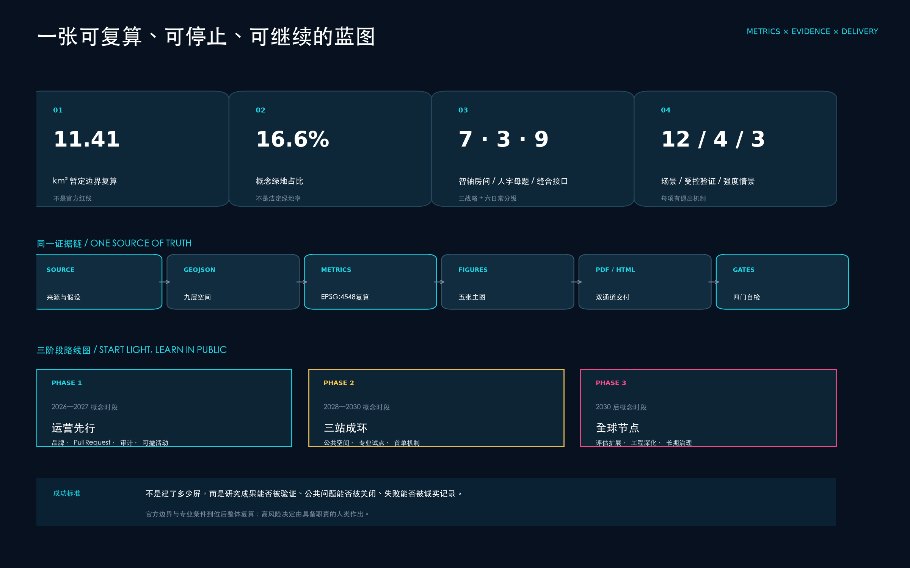
第一类（可由本包几何复算，provisional 置信度）：场地面积约 11.41 km² 指标；绿地约 227.8 万 m²、比率约 0.20 指标 指标；公共空间约 90.1 万 m²、比率约 0.079 指标；概念建筑基底约 48.2 万 m² 指标；重点区 3 处 指标。
第二类（街区结构已知、地块强度未知）：容积率、建筑密度、建筑高度等 unknown；1668.2 ha 与「一带一轴、两心多点」只作结构对位，不进入 metrics 复算分母 深度 来源。第三类（运营绩效）：人才密度、活动参与、慢行可达、Openline 预约完成率等进入 assumptions，不写入审定条件；生态目标承诺（碳预算 / 径流控制率 / 热岛降幅 / 生物多样性净增益 / 树冠覆盖，A-ECO-001）同属此类——进监测闭环，不写成实测绩效。任务覆盖见任务覆盖矩阵、专业标准矩阵与设计深度矩阵；公告 1.3–1.5 与 agent.1–agent.6 均须有章节与图层证据。
风险、版权与合规说明
双语合同已启用：主文件中文，完整对照见 proposal.en.md；图件提供 .en.png。风险清单对齐缺资料表：官方红线、重点区正式 polygon、道路红线、宗地权属、现状建筑、文保控制、市政消防等均待补 深度 来源。
本方案不声称官方批准、审定控规、最终权属、最终建设规模或保证实施。AI agent 对事实、来源、版权与表达负责；所有空间想法均为概念建议/参考方案，供专业团队深化。图片、字体与代码资产来源见 sources.json 与 report/copyright_statement.md；visual/index.html 保持离线、无远程依赖。
附录 A｜AI 时代城市形态创新：形态八题 · 前瞻矩阵（全文）
本附录自正文统筹研究章移入，内容不变；正文仅保留理论地基与一句话索引，以保持 Openline 100 单一统领的叙事主线。
理论地基： 每次通用技术革命都以"成本坍缩 → 区位重排 → 旧范式变城市病"的逻辑重写城市形态——蒸汽坍缩物资位移成本带来站台城市，电力带来摩天楼，汽车坍缩个人位移成本留下宽马路与「看得见、走不通」。AI 坍缩的是认知与协调成本：程式化认知变廉价后，溢价的是只能当面完成的四件事——默会知识、信任与验证、意外相遇、责任承担。故 AI 创新带不是更大的办公室，而是一台信任基础设施：Openline 规则是其协议层，以下形态八题是其物质层；形态任务一句话——把「验证一件事」的空间成本降到最低。五个物质动因：智能具身化、空间可排程、基础设施分布化、生产组织微粒化、感知全面化。完整机理、概念指标与分期见附录 A，全部量化值为概念量级、不伪精确。
形态八题总表（现在就能开工的形态）：
| # | 新类型 | 形态动作（概念） | 硬禁忌 |
|---|---|---|---|
| 1 | 可编程街道（4D 分区） | 同一断面排四种班表（通勤/生活/仪式/物流）；时段角色用铺装与色温表达，不用屏 | 步行路权全时 ≥ 50% 断面 |
| 2 | 机器人路权四级断面 | 行人＞骑行＞0.9 m 低速机器带（触感铺装分隔、无栏）＞服务车时段准入；街头机器皆有编号可投诉 | 机器带永不升级为机动车道 |
| 3 | 第三条轨：能源—数据公用脊 | 沿 L2 浅埋公用廊 + 街区微电网；光伏廊架兼遮荫；井盖刻接口容量，井盖即 API 文档 | 不切断步行、不伪报造价 |
| 4 | 端侧算力驿站 | 新型公共建筑：响应站 + 机器人巢 + 余热暖座温室——算力的温度可坐可触 | 供应商另行授权；公私算力物理隔离 |
| 5 | 开源院落 | 30–40 ㎡ 可聚合单元、首层是厂、中院是议会；居住的柔性即创新基础设施 | 围墙连续 ≤ 50 m |
| 6 | 可核验首层 + 机器可读形态代码 | 首层「三可」（可进入/可发生/可退出）换弹性强度（政策建议）；形态代码开源、可仿真、随 Inherit 版本化 | 不破刚性约束、不预支政策 |
| 7 | 离线庇护所 | 800–1000 m 间距无感知口袋绿地；导视地图上的「空白方印」 | 不做说教装置、不设使用登记 |
| 8 | 试验场即公园 | 具身智能评测地形与市民公园同体分时——孩子爬坡和机器人爬坡共用一条坡 | 高速/载荷测试另寻封闭设施 |
前瞻矩阵（五域驱动 × 信号→触发→响应，不预测、只预埋）：
| 域 | 驱动 | 信号（已发生） | 触发 | 形态预埋 |
|---|---|---|---|---|
| 技术 | 自动驾驶成熟 | 路内泊位收缩 | 接驳试点落地 | 断面按「车道可退线」预留；停车地块登记可转换储备 |
| 技术 | 机器人规模化 | 配送/清扫机器人上街 | 机器带流量饱和 | 断面与巢位按「可翻倍」预留 |
| 技术 | AI 范式跃迁（不可预测） | 技术史从未被猜中 | 不押注 | 设施只承诺电、网、空间三个物理接口 |
| 经济 | 办公需求坍缩 | 写字楼空置上升 | 去化周期拉长 | 新建体量按「办公—居住—公共」三向可平转校核 |
| 经济 | 土地财政退坡 | 财政转向运营平衡 | 全生命周期成本审查落地 | 运维成本结构前置；预留可运营界面 |
| 社会 | 人口收缩与家庭微粒化 | 一人户比例上升 | 人口结构数据变化 | 院落聚合梯度双向设计（可并可拆） |
| 社会 | 深度老龄化 | 照护缺口扩大 | 养老设施指标下达 | 800 m 全龄庇护圈；照护可自动化、尊严不可 |
| 社会 | 大学角色转变 | 终身学习兴起 | 高校开放政策出现 | 近校转化街双向接口（不虚构权属） |
| 生态 | 极端气候 | 暴雨高温日数上升 | 滞洪指标入控规 | 蓝绿脊按滞洪廊道断面预留；庇护所兼冷岛 |
| 生态 | 全面电气化 | 街区负荷攀升 | 触及配网阈值 | 微电网升级为街区调节资源，扩容位已预留 |
| 生态 | 碳约束与循环建造 | 隐含碳约束趋紧 | 可拆装审批通道出现 | 可逆建造 + 材料银行：fork 一栋建筑，merge 一处更新 |
| 治理 | 数据治理立法演进 | 算法治理持续收紧 | 感知设备审计落地 | 退出权已物化，超前合规 |
| 治理 | 公共信任稀缺 | 算法决策争议增多 | 标志性舆情事件 | 治理门让信任靠目击重建 |
分支稳健（三个关键分歧两边都成立）： 算力集中或分布——驿站同一建筑两种角色；普惠或监控——退出权已物化，坏未来里仍保留「关机」的肌肉记忆；繁荣或退潮——所有形态可平转为普通城市功能，没有任何形态依赖「AI 永远热」。
不变量清单（矩阵覆盖「会变什么」，清单收口「什么不会变」）：
| 不变量 | 形态上的焊点 |
|---|---|
| 人要用腿走路 | 步行路权全时 ≥ 50% 断面（题 1） |
| 冬冷夏热需要树荫遮蔽 | 檐下连续廊 + 树冠连续（题 3/6） |
| 需要聚集，也需要独处 | 集会环与背向座椅并存（题 7） |
| 有不被观看的权利 | 离线庇护所、空白方印（题 7） |
| 会老、会病、会推婴儿车 | 全断面无障碍、800 m 庇护圈 |
| 孩子要玩，玩是最好的学习 | 试验地形全时段向儿童开放（题 8） |
| 社区需要记忆与悼念的处所 | 失败案例库、地层墙、L1 里程思辨碑 |
| 基础设施要养得起、修得到 | 浅埋第三轨、运维成本前置（题 3） |
变量预埋接口，不变量焊死形态。 我们无法知道 2046 年的 AI 是什么，但知道 2046 年的人仍用腿走路、仍需要树荫、仍需要不被观看的角落、仍然会老——为不变量设计的城市，不会过时。
附录 B｜全球 AI 创新生态八案例机制转译（全文）
本附录自正文统筹研究章移入，内容不变；正文仅保留机制一句话索引。
下列案例仅作空间与运营机制转译，不编造投资额、企业名单或政府承诺 来源：
| # | 案例 | 可转译机制（不是口号） | Openline 落点 | 避免照搬的点 |
|---|---|---|---|---|
| 1 | Station F（巴黎） | 大站房尺度的共享服务与集中创业界面 | 智能原生街作公共采用面；企业服务落在 1733 既有可预约厅；站域只做到达 | 不复制车站产权；不把商场中庭起名当地标；不做钟形屋顶；不把换乘写成全区产品 |
| 2 | MaRS（多伦多） | 医院/大学/企业共址的转化走廊 | 原点近校成果转化街（授权接口） | 不虚构高校共建合同 |
| 3 | Kendall Square | 实验室—街道—广场连续公共界面 | Openline 两侧「首层开放协议」 | 不套用波士顿 FAR |
| 4 | Science Park Amsterdam | 绿廊串联研究单元 | 京张遗址公园蓝绿主脊 + 众智园全栈协作街贴边（不占廊心） | 不把公园改写成封闭园区 |
| 5 | HafenCity Digital Hub | 遗产地上的数字创新与慢行 | 众智园共享首层与治理界面叠在遗产廊道叙事上 | 不主张拆除历史遗存 |
| 6 | Block71（新加坡） | 轻资产社区运营与路演节奏 | 开发者社区 + 活动周 | 不写成已批运营主体 |
| 7 | Cyberport（香港） | 企业服务与公共展演并置 | 1733 既有可预约厅（路演 / 数据会客） | 不承诺财政激励 |
| 8 | 中关村街道式创新网络 | 近校、近轨、近生活的混合街区 | 五道口—清华东路缝合 + 生活样板街 | 不抹平原点与众智园差异 |
附录 C｜三张全深度场景卡详案（1:1 对三重点区）
正文保留摘要。本附录写三区生产逻辑——少一步即假——不是观光站。未呼先应见东翼索引 S-09。
C-1 场景卡 01｜AI+原点社区 · 策源如何过墙
本卡生产什么：可过墙的策源。
官方给原点三个产品——全球首发地、栖息地、全要素生态服务站——政策已经买齐。缺的不是又一座孵化器，而是它们之间的必要关系。没有授权，八找是非法匹配；八找不在步行内，服务站是目录；没有可失败的公开声称，首发地是会场；没有非表演客户，声称是路演；失败不留给下一届，生态每届清零。200 m 走廊是切片。官方约 3 km² 不以 104 ha 替代。
墙不是一道门，是四项许可绑在一起： 谁拥有、可否公开、用到哪里、出事找谁。人可以从校园走进公园；许可过不去，策源就还在墙里。
一句话场景：许可条没办下来，转化街拒收原型——不是窗口不热情，是后四环会全部变成违法。许可办完，八找仍要跑四个园区，她不会留下来完成首发。食堂付了第一笔钱，失败被下一届读到：原点开始像生态，而不像每学期清场的近校园区。
因果链（不是观光站；跳过任一步即假）
权（Join）──► 配 ──► 证 ──► 用（Verify）──► 遗（Exit → Inherit）
许可过墙 八找步行成交 公开可失败声称 非表演客户 负知识留作公地
跳过→泄密/违约 跳过→目录 跳过→转移办公室 跳过→路演 跳过→每届清零| 环节 | 它在生产函数里做什么 | 空间落点 | 跳过则假 |
|---|---|---|---|
| 权 | 让后四环合法。许可条最小必要：范围、期限、可否开源、责任人。地图、72 小时工坊、见面日程替代不了许可。 | 校缘授权窗口 | 无许可的匹配与首发 = 泄密或违约。原点变成无墙的园区。 |
| 配 | 把官方八找从目录变成步行内成交的要素市场。栖息地挂在匹配边上，只为让人留得够久把八找做完。 | 一条可走的并置界面 | 仍要跑四个园区 = 全要素服务站是海报。「10 分钟找伙伴」无法成为空间事实。 |
| 证 | 把「全球首发地」落实为可失败的公开声称。关起门转化是技术转移办公室。失败不进宣传片，进失败案例库。 | 开源发布厅（S-01） | 无公开声称 = 近校办公，不是策源地。 |
| 用 | 需求侧核验。食堂、配送、导览、物业做真实交易。居民知情同意、可退出。脱敏摘要回流众智园，供卡 03 升级许可。 | 社区微场景 | 只有路演客户 = Verify 没发生。原点无法向大钟寺交出可上街的东西。 |
| 遗 | 负知识成为公地。下一届不必付同一笔学费。可撤、可改写；退出者协助注销，不社死。 | 失败案例库；到达仍是 OL-07 缝合甲板 | 失败带走 = 每届清零，不是生态。不走甲板就能进公园 = 墙还在，只是没被设计。 |
与另两区： 小月河出题 → 原点把题过墙并公开声称 → 众智园工程化并过治理门 → 大钟寺上街采用 → 失败回流本库与治理门。原点不代替众智园做全栈，不上大钟寺的街。
自检边界：不承诺投资与政策待遇；不虚构高校合同；不把 3 km² 画进 104 ha；不做成功学排名；居民不是试验品。
---
C-2 场景卡 02｜大钟寺 · 核验过的能力必须能上街
本卡生产什么：可拒绝的采用。
资格预审公告给大钟寺的是城市型街区，不是领军企业园区，也不是站前装置。深度不在「从地铁走到厅再到社区」的观光顺序，而在三层必须同时成立的结构。未呼先应见东翼 S-09。1733 已是城市更新样本，不是白纸。
三层并置（不是五站）
┌─ 街面法则（主产品）：核验过的能力占用首层；说明条四项；可试用、可拒绝
路过 ───┤
├─ 下街例外（分流，不是下一站）：数据要素 / 国际交往 → 1733 既有可预约厅
└─ 生活剩余（不可让渡）：通学 / 买菜 / 古钟导视
8 分钟到达只检验：上述三层能否被没预约的人碰上；它本身不是产品。一句话场景：她没预约。街面上有一件写着「谁核验、失败过什么、出事找谁、如何拒绝」的试用——她试了，拒绝了。数据会客在她不必经过的厅里。东南象限仍能接孩子。营业没有切断她的路。若试用只在封闭厅、数据摊在过道、或通学被展位占掉：大钟寺就不是城市型街区。
三层分别生产什么
| 层 | 它在生产函数里做什么 | 空间落点 | 跳过 / 弄反则假 |
|---|---|---|---|
| 街面法则 | Adoption 的定义：没预约也能碰上已核验能力。说明条四项缺一不准上街。试用可拒绝，否则是广告。 | 总部界面、1733 外沿、公园贴边的连续首层 | 无说明条 = 广告廊。只能进封闭厅才碰上 = 园区展厅。营业切断通行 = 法则对员工有效、对城市无效。 |
| 下街例外 | 不够格上街的东西必须离开公共通行。数据要素要授权清单与审计；国际路演要清权与预约。西翼提供 IP / 资本 / 许可，不在此另造基金大厦。 | 1733 既有可预约厅（S-08 / S-05） | 把厅写成「下一站」= 目的地是商场。数据摊上街 = 泄露的街。新建塔楼 = 不承认 1733 已是样本。 |
| 生活剩余 | 城市型街区的非产业部分不可让渡。产业吃掉通学、买菜、古钟导视，街区就变成园。规划绿地只在贴边可逆插入，不占廊心。 | 东南通学、东北买菜、西北古钟导视 | 四象限被展位或车行切断 = 产业园冒充街区。仿钟、改名中庭 = 用符号代替城市。 |
| 到达（检验，不是层） | 测试法则对路过者是否成立。既有约 8 分钟路径保持公共通行；东端无障碍 P0；四象限步行。2027 站内归地铁，街面规则留下。 | OL-04 | 把换乘写成全区产品 = 站前装置冒充 72 ha。挖新隧 = 不承认既有路径。 |
三个冲突（设计必须站队）
1. 领军企业校园 vs 城市型街区：能力必须在无通行证的首层被碰上。 2. 上街 vs 预约厅：够格上街的才上街；不够格的进厅，不占路。 3. 产业占用 vs 生活剩余：四象限不是街面的配景，是街区仍是城市的证据。
与另两区： 上街的东西必须先在原点过墙、在众智园过治理门。大钟寺不发明能力，只采用；采用失败回流治理门与原点失败案例库。
自检边界：首层协议须业主与街道同意；不把字节跳动写成已签约业主；不报容积率；街面不是广告廊。
---
C-3 场景卡 03｜众智园 · 全栈如何升级而不拆城
本卡生产什么：可许可的换代。
全栈自主要求模块会被替换；全球治理要求替换必须有人负责；花园型街区要求替换不拆街。学北园约 3.53 ha 是种子，不是 192 ha。国家平台不画成已落地的楼。15 分钟路径是检验，不是导览产品。人机共生落在治理门的公众面，不另立展厅品牌。
时间分层（不是园区环线）
不变层 共享底板（电 / 网 / 空间 / 市政 / 安防） ← 换代不拆城的物理含义
可变层 五类单元邻里（可扩、可缩、可退） ← 全栈是可替换模块，不是五座园
许可层 治理门（人工复核 / 责任 / 退役 / 遗憾条款） ← 换代的唯一合法入口
可读层 全栈说明书（无通行证能读懂关系） ← 换代之后城市仍可被理解
同一许可出海 底板+门一起走，不另造平行园一句话场景：她把设备接到底板上，下午在治理门提交一次模块换代——三个不可通约方案，一条反对写进决议的遗憾条款。明年她扩一间或退一间，街还在。一个没有实验室通行证的中学生走同一条底板，仍能读懂底层能力到标准的关系。若换代要拆街、或换代不必过门、或过门后公众读不懂：众智园就只是会过时的园。
各层分别生产什么
| 层 | 它在生产函数里做什么 | 空间落点 | 跳过则假 |
|---|---|---|---|
| 不变层 | 承诺街区比模型活得长。换模块，不换底板。 | 共享门厅、公共技术平台、市政接口 | 底板跟着模块改 = 换代拆城。 |
| 可变层 | 芯片算力 / 基础软件 / 数据模型 / 智能体应用 / 具身场景做成邻居。小团队 Exit 写进邻里：扩、缩、退不必搬出园。 | 全栈协作街、可升级单元样板庭院 | 五座封闭园 = 全栈是口号。不能退只能走 = 升级驱逐小团队。 |
| 许可层 | 模块换代、上路、对外展示的唯一合法入口。S-02 沙盒是受控工具，公众可见、不可闯入。 | 全球 AI 标准与治理中心的治理门 | 无门的换代 = 无人负责的拆除。门无公众面 = 实验室政治。 |
| 可读层 | 换代之后城市仍可被理解。共享首层只说明全栈关系与治理贡献，不是科技主题乐园。 | 共享首层、清河花园客厅 | 无通行证读不懂 = 国家平台是黑盒。 |
| 同一许可出海 | 出口的是底板+门，不是第二套天际线。五环 / 清河只锁关系，不报线位。 | 同一套接口 | 另造平行园 = 复制天际线，不输出治理。 |
治理门的公众面（压缩自原议事廊，不另起英文剧名）
换代许可必须被路过看见，否则许可层是内部手续。感知：聚合数据公开，红开关按下写「此处数据已被公民选择隐藏」。推演：至少三个不可通约方案，标置信度与盲区，不得输出单一最优解。争议：异议登记墙，决议必须回应至少一条反对。决议：遗憾条款由反对者起草、支持者认可，下期先回应执行。遗产：治理地层墙，新砖滑入正面，旧砖侧移仍可见——失败的升级仍承重。接诉即办高频问题可进入推演层。被算法决定的人，有权看见算法。
15 分钟只检验分层是否仍可读： 学知园站 → 共享门厅 → 公共技术平台 → 单元样板庭院 → 治理中心 → 清河花园 → 公园北段。走不通就改入口，不在图上宣布完成。正式红线到位后再实测。
与另两区： 原点交来过墙后的声称与微场景证据；本区工程化并过门；大钟寺只采用过门的能力。采用失败与升级遗憾回流本门与原点失败案例库。
自检边界：不声称业主同意、国家平台落地或具身智能获准上路；AI 不得替代政治判断；学北园面积不以 192 ha 替代；能读懂全栈不意味着可以闯入受控实验室。
参考资料
- brief/site-package/design_brief.json、allowed_design_space.json、agent_taskbook.json
- data/source_registry.json、data/processed/agent_fact_pack.md 及同目录 CSV
- docs/terminology-glossary.md
- 2026-08-11 街区控规获批公开报道：北京日报 / 人民网 2026-08-12、央广网 2026-08-12、首都之窗北京要闻 2026-08-12（来源）
- 2025-02-08 草案公示采信通告（市规自委海淀分局）（来源）
- 2024-12-27 北京晚报草案阶段公开口径，仅作背景、不升格为已批指标（来源）